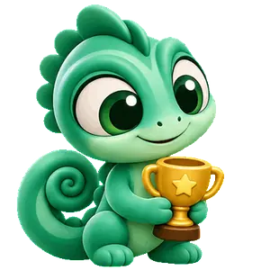
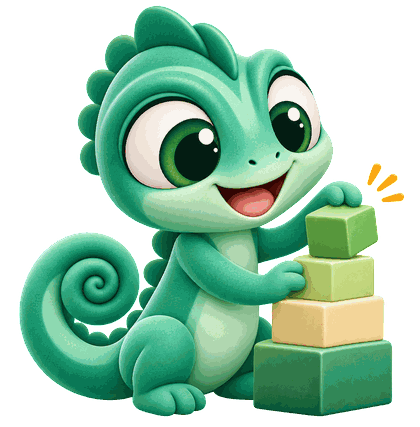

<!doctype html>
<html lang="en">
<head>
<meta charset="utf-8">
<meta name="viewport" content="width=device-width,initial-scale=1,viewport-fit=cover">
<title>Linguae</title>
<meta name="claude:viewport-fit-sides" content="cover">
<link rel="icon" type="image/svg+xml" href="assets/favicon.svg">
<link rel="icon" type="image/png" sizes="64x64" href="assets/favicon.png">
<link rel="apple-touch-icon" href="assets/apple-touch-icon.png">
<meta name="theme-color" content="#1D7A5F">
<link rel="preconnect" href="https://fonts.gstatic.com" crossorigin>
<link rel="stylesheet" href="https://fonts.googleapis.com/css2?family=Outfit:wght@400;500;600;700&family=DM+Sans:opsz,wght@9..40,400;9..40,500;9..40,600;9..40,700&display=swap">
<link rel="stylesheet" href="https://fonts.googleapis.com/css2?family=Material+Symbols+Rounded:opsz,wght,FILL,GRAD@24,500,1,0&display=block">
</head>
<body>
<style>
/* Linguae 2.0 — tokens and components follow Linguae React UI Kit 2.0 and Brand Book 1.0.
   Layout: sidebar + content on desktop, bottom tab bar on phones, full-screen lesson shell. */
:root{
  /* Forest Green #248F70 is the brand reference; the UI green is deepened to #1D7A5F
     so white-on-green and green-on-white both clear WCAG AA (4.5:1). */
  --color-primary:#1D7A5F; --color-primary-dark:#17634E; --color-primary-light:#A8DDBB;
  --color-primary-ink:#1D7A5F; --color-primary-soft:#E5F1E8;
  --color-accent:#F2B85B; --color-accent-ink:#8A6730; --color-accent-soft:#FBEFD8;
  --color-coral:#F28B75; --color-coral-ink:#9F594A; --color-coral-soft:#FDEAE4;
  --color-cta:#253D36; --color-cta-ink:#FFFFFF;
  --color-background:#F8F7F0; --color-surface:#FFFFFF; --color-surface-soft:#F5EBCB;
  --color-raise:#F7F9F5;
  --color-text:#253D36; --color-text-muted:#616D67; --color-border:#E7E9E2;
  --tile-mint:#E4F4E9; --tile-gold:#FFF0D1; --tile-coral:#FFEBE6;
  --hero-from:#E8F4EA; --hero-to:#F9F1DA;
  --medal-from:#FFEDC2; --medal-to:#F2B85B; --medal-ring:#FFF6DF; --medal-ink:#684410;
  --font-heading:'Outfit','Segoe UI',system-ui,sans-serif;
  --font-body:'DM Sans','Segoe UI',system-ui,sans-serif;
  --radius-card:16px; --radius-button:12px; --radius-input:10px;
  --shadow-soft:0 1px 2px rgba(37,61,54,.05),0 6px 18px rgba(37,61,54,.05);
  --shadow-lift:0 2px 4px rgba(37,61,54,.07),0 10px 26px rgba(37,61,54,.08);
  --t:180ms cubic-bezier(.2,.7,.3,1);
}
/* Dark is not the light theme with the lights off: the brand's warm cream and
   golden yellow carry the surfaces and the text, and green stays where it
   means something — the primary button, a right answer, progress. The two
   blocks below are the same palette twice, once for the system setting and
   once for data-theme="dark"; a test holds them to that and checks every pair
   of text and background against AA. */
@media (prefers-color-scheme:dark){:root:not([data-theme="light"]){
  --color-primary:#1D7A5F; --color-primary-dark:#17634E; --color-primary-light:#A8DDBB;
  --color-primary-ink:#9FD9B4; --color-primary-soft:#2E3A2B;
  --color-accent:#F2B85B; --color-accent-ink:#F7C871; --color-accent-soft:#3A2F1A;
  --color-coral:#F28B75; --color-coral-ink:#F2A190; --color-coral-soft:#3B271F;
  --color-cta:#F2B85B; --color-cta-ink:#2A1D05;
  --color-background:#1C1813; --color-surface:#262117; --color-surface-soft:#332B1C;
  --color-raise:#2E2819;
  --color-text:#F6EFDE; --color-text-muted:#BFB198; --color-border:#3D3527;
  --tile-mint:#23362B; --tile-gold:#3C3119; --tile-coral:#3B271F;
  --hero-from:#243029; --hero-to:#3A2F1A;
  --medal-from:#6B4F16; --medal-to:#F2B85B; --medal-ring:#4A3A14; --medal-ink:#2A1D05;
  --shadow-soft:0 1px 2px rgba(0,0,0,.34),0 6px 18px rgba(0,0,0,.26);
  --shadow-lift:0 2px 6px rgba(0,0,0,.38),0 12px 28px rgba(0,0,0,.3);
  color-scheme:dark;
}}
:root[data-theme="dark"]{
  --color-primary:#1D7A5F; --color-primary-dark:#17634E; --color-primary-light:#A8DDBB;
  --color-primary-ink:#9FD9B4; --color-primary-soft:#2E3A2B;
  --color-accent:#F2B85B; --color-accent-ink:#F7C871; --color-accent-soft:#3A2F1A;
  --color-coral:#F28B75; --color-coral-ink:#F2A190; --color-coral-soft:#3B271F;
  --color-cta:#F2B85B; --color-cta-ink:#2A1D05;
  --color-background:#1C1813; --color-surface:#262117; --color-surface-soft:#332B1C;
  --color-raise:#2E2819;
  --color-text:#F6EFDE; --color-text-muted:#BFB198; --color-border:#3D3527;
  --tile-mint:#23362B; --tile-gold:#3C3119; --tile-coral:#3B271F;
  --hero-from:#243029; --hero-to:#3A2F1A;
  --medal-from:#6B4F16; --medal-to:#F2B85B; --medal-ring:#4A3A14; --medal-ink:#2A1D05;
  --shadow-soft:0 1px 2px rgba(0,0,0,.34),0 6px 18px rgba(0,0,0,.26);
  --shadow-lift:0 2px 6px rgba(0,0,0,.38),0 12px 28px rgba(0,0,0,.3);
  color-scheme:dark;
}
*{box-sizing:border-box}
html,body{height:100%}
body{margin:0;background:var(--color-background);color:var(--color-text);
  font-family:var(--font-body);font-size:16px;line-height:1.55;-webkit-font-smoothing:antialiased}
h1,h2,h3,h4{font-family:var(--font-heading);margin:0;text-wrap:balance;letter-spacing:-.02em}
h1{font-weight:700;font-size:30px;line-height:1.18}
h2{font-weight:700;font-size:25px;line-height:1.22}
h3{font-weight:600;font-size:18px}
p{margin:0}
img{max-width:100%}
button{font:inherit;color:inherit}
body::before{content:"";position:fixed;inset:0 0 auto;height:env(safe-area-inset-top,0px);
  background:var(--color-surface);z-index:60}
#app{min-height:100%;display:flex;flex-direction:column}
.ms{font-family:'Material Symbols Rounded';font-weight:400;font-style:normal;line-height:1;
  letter-spacing:normal;text-transform:none;display:inline-block;white-space:nowrap;direction:ltr;
  font-variation-settings:'FILL' 1,'wght' 500,'GRAD' 0,'opsz' 24;font-size:22px;vertical-align:-5px}
.ms--sm{font-size:18px;vertical-align:-4px}
.ms--lg{font-size:28px;vertical-align:-7px}
.eyebrow{font-family:var(--font-body);font-size:11px;font-weight:700;letter-spacing:.16em;
  text-transform:uppercase;color:var(--color-text-muted)}
.muted{color:var(--color-text-muted)}
.num{font-variant-numeric:tabular-nums}
.center{text-align:center}
.row{display:flex;align-items:center;gap:12px}
.spacer{flex:1}
:focus-visible{outline:3px solid var(--color-accent);outline-offset:3px;border-radius:6px}

/* ---------- buttons (UI Kit: radius 12, 44px target, lift on hover) ---------- */
.btn{display:inline-flex;align-items:center;justify-content:center;gap:8px;min-height:44px;
  border:1px solid transparent;border-radius:var(--radius-button);padding:13px 20px;
  font-family:var(--font-body);font-weight:600;font-size:15px;cursor:pointer;
  background:var(--color-primary-soft);color:var(--color-primary-ink);
  transition:transform var(--t),background var(--t),box-shadow var(--t)}
.btn:hover:not(:disabled){transform:translateY(-2px);box-shadow:var(--shadow-soft)}
.btn:active:not(:disabled){transform:translateY(0)}
.btn--primary{background:var(--color-primary);color:#fff}
.btn--primary:hover:not(:disabled){background:var(--color-primary-dark)}
.btn--dark{background:var(--color-cta);color:var(--color-cta-ink)}
.btn--outline{background:transparent;border-color:var(--color-primary-ink);color:var(--color-primary-ink)}
.btn--quiet{background:transparent;border-color:var(--color-border);color:var(--color-text-muted)}
.btn--coral{background:var(--color-coral);color:#2A1710}
.btn--full{width:100%}
.btn--sm{min-height:0;padding:9px 14px;font-size:14px;border-radius:10px}
.btn:disabled{cursor:not-allowed;background:var(--color-border);color:var(--color-text-muted);opacity:.75}

/* ---------- surfaces ---------- */
.card{background:var(--color-surface);border:1px solid var(--color-border);
  border-radius:var(--radius-card);padding:22px;box-shadow:var(--shadow-soft)}
.card--soft{background:var(--color-surface-soft);border-color:transparent;box-shadow:none}
.pill{display:inline-flex;align-items:center;gap:7px;background:var(--color-surface);
  border:1px solid var(--color-border);border-radius:100px;padding:8px 13px;
  font-size:13px;font-weight:600;cursor:default}
button.pill{cursor:pointer;transition:border-color var(--t)}
button.pill:hover{border-color:var(--color-primary-ink)}
.code{width:26px;height:26px;border-radius:8px;flex:none;overflow:hidden;
  box-shadow:inset 0 0 0 1px rgba(37,61,54,.18)}
.code svg{display:block;width:100%;height:100%}

/* ---------- shell: sidebar on desktop, tab bar on phones ---------- */
.shell{display:flex;min-height:100%;flex:1}
.sidebar{width:244px;flex:none;background:var(--color-surface);border-right:1px solid var(--color-border);
  padding:24px 16px;display:flex;flex-direction:column;position:sticky;
  top:env(safe-area-inset-top,0px);height:100vh;padding-left:max(16px,env(safe-area-inset-left,0px))}
.brand{display:flex;align-items:center;margin:2px 4px 32px}
.logo{display:inline-flex;align-items:center;gap:9px;max-width:100%;line-height:1;color:var(--color-text)}
.logo img{width:50px;height:50px;object-fit:contain;flex:none}
.logo__type{display:flex;flex-direction:column;min-width:0}
.logo__type strong{font-family:var(--font-heading);font-weight:700;font-size:24px;letter-spacing:-.03em}
.logo__type small{font-family:var(--font-body);font-weight:700;font-size:7.5px;letter-spacing:.14em;
  margin-top:5px;white-space:nowrap;color:var(--color-text-muted)}
.logo--compact img{width:36px;height:36px}
.logo--compact .logo__type strong{font-size:20px}
.logo--lg{flex-direction:column;gap:10px}
.logo--lg img{width:116px;height:116px}
.logo--lg .logo__type{align-items:center}
.logo--lg .logo__type strong{font-size:36px}
.logo--lg .logo__type small{font-size:11px;letter-spacing:.2em;margin-top:7px}
.nav-label{margin:0 12px 12px}
.nav-item{display:flex;align-items:center;gap:12px;width:100%;background:none;border:0;text-align:left;
  padding:12px 14px;border-radius:11px;color:var(--color-text-muted);font-weight:600;font-size:14.5px;
  cursor:pointer;margin-bottom:6px;transition:background var(--t),color var(--t)}
.nav-item:hover,.nav-item.active{background:var(--color-primary-soft);color:var(--color-primary-ink)}
.side-card{background:var(--color-primary-soft);border-radius:18px;padding:16px;margin-top:auto;
  text-align:center}
.side-card img{width:104px;height:auto}
.side-card strong{display:block;font-family:var(--font-heading);font-size:15px;margin-top:4px}
.side-card p{font-size:12.5px;color:var(--color-text-muted);margin-top:2px}
.main-wrap{flex:1;min-width:0;display:flex;flex-direction:column}
.topbar{position:sticky;top:env(safe-area-inset-top,0px);z-index:30;display:flex;align-items:center;gap:12px;
  min-height:68px;padding-block:10px;background:var(--color-surface);border-bottom:1px solid var(--color-border);
  padding-left:max(18px,env(safe-area-inset-left,0px));padding-right:max(18px,env(safe-area-inset-right,0px))}
.mobile-brand{display:none;align-items:center}
main{flex:1;width:100%;max-width:1200px;margin:0 auto;padding-block:28px 64px;
  padding-left:max(18px,env(safe-area-inset-left,0px));padding-right:max(18px,env(safe-area-inset-right,0px))}
.page{display:flex;flex-direction:column;gap:22px}
.page-head{display:flex;justify-content:space-between;align-items:flex-end;gap:18px;flex-wrap:wrap}
.page-head p{color:var(--color-text-muted);margin-top:6px;font-size:15px}
.tabbar{display:none}
.appfoot{text-align:center;color:var(--color-text-muted);font-size:12px;padding:18px 0 28px}

/* ---------- hero ---------- */
.hero{position:relative;overflow:hidden;display:flex;align-items:center;justify-content:space-between;
  gap:18px;background:linear-gradient(110deg,var(--hero-from),var(--hero-to));
  border-radius:23px;padding:30px 34px;min-height:236px}
.hero__txt{z-index:1;max-width:460px;display:flex;flex-direction:column;align-items:flex-start;gap:12px}
.hero h2{font-size:28px}
.hero p{color:var(--color-text);opacity:.82;font-size:15px}
.hero .eyebrow{color:var(--color-primary-ink)}
.hero img{align-self:flex-end;width:238px;margin-bottom:-30px;flex:none}

/* ---------- stats ---------- */
.stats{display:grid;grid-template-columns:repeat(auto-fit,minmax(176px,1fr));gap:16px}
.stat{display:flex;flex-direction:column;gap:2px}
.stat-icon{display:grid;place-items:center;border-radius:12px;width:38px;height:38px;margin-bottom:12px}
.stat-icon.mint{background:var(--tile-mint);color:var(--color-primary-ink)}
.stat-icon.gold{background:var(--tile-gold);color:var(--color-accent-ink)}
.stat-icon.coral{background:var(--tile-coral);color:var(--color-coral-ink)}
.stat .label{font-size:12.5px;font-weight:600;color:var(--color-text-muted)}
.stat strong{font-family:var(--font-heading);font-weight:700;font-size:27px;line-height:1.2;margin:4px 0}
.stat p{font-size:12.5px;color:var(--color-text-muted)}
.progress{height:9px;background:var(--color-border);border-radius:100px;overflow:hidden;margin:10px 0 2px}
.progress span{display:block;height:100%;border-radius:100px;background:var(--color-primary-ink);
  transition:width 250ms cubic-bezier(.2,.7,.3,1)}

/* ---------- dashboard grid ---------- */
.grid2{display:grid;grid-template-columns:1.25fr 1fr;gap:18px}
.section-heading{display:flex;align-items:center;justify-content:space-between;gap:12px;margin-bottom:14px}
.lesson-inner{display:flex;align-items:center;gap:14px;padding:16px;background:var(--color-raise);
  border-radius:14px}
.lesson-inner>div:nth-child(2){flex:1;min-width:0}
.lesson-inner p{font-size:12.5px;color:var(--color-text-muted)}
.circle-btn{border:0;background:var(--color-primary);color:#fff;width:38px;height:38px;border-radius:50%;
  cursor:pointer;display:grid;place-items:center;flex:none;transition:transform var(--t)}
.circle-btn:hover{transform:translateY(-2px)}
.minipath{display:flex;align-items:center;justify-content:center;padding:18px 0 10px}
.path-step{border-radius:50%;width:40px;height:40px;display:grid;place-items:center;flex:none;
  background:var(--color-border);color:var(--color-text-muted);font-weight:700;font-size:14px}
.path-step.done{background:var(--color-primary);color:#fff}
.path-step.current{background:var(--color-surface-soft);color:var(--color-text);
  border:2px solid var(--color-accent)}
.path-line{height:3px;background:var(--color-border);flex:1;max-width:58px}
.mini-card{display:flex;align-items:center;gap:13px;background:var(--tile-mint);padding:14px;
  border-radius:12px}
.mini-card.attention{background:var(--tile-coral)}
.mini-card p{font-size:12.5px;color:var(--color-text-muted)}
.small-note{text-align:center;font-size:12.5px;color:var(--color-text-muted)}

/* ---------- learning trail ---------- */
.unit{display:flex;flex-direction:column;gap:12px}
.unit__hd{display:flex;align-items:center;gap:12px;border-radius:var(--radius-card);padding:14px 16px;
  color:#fff;background:var(--color-primary)}
.unit__hd small{display:block;font-size:11px;font-weight:700;letter-spacing:.16em;text-transform:uppercase}
.unit__hd h3{font-size:18px}
.note{background:var(--color-surface-soft);border-radius:var(--radius-card);padding:12px 14px;font-size:14px}
.note em{display:block;font-style:normal;font-family:var(--font-heading);font-weight:600;font-size:11px;
  letter-spacing:.16em;text-transform:uppercase;color:var(--color-text-muted);margin-bottom:3px}
.trail{position:relative;display:flex;flex-direction:column;align-items:center;gap:18px;padding:10px 0 4px}
.trail::before{content:"";position:absolute;top:16px;bottom:16px;left:50%;width:0;
  border-left:2px dashed var(--color-border);transform:translateX(-1px)}
.node{position:relative;display:flex;flex-direction:column;align-items:center;gap:6px;
  transform:translateX(calc(var(--k) * clamp(0px,7vw,54px)))}
.node__btn{width:64px;height:64px;border-radius:50%;cursor:pointer;display:grid;place-items:center;
  background:var(--color-surface);border:1px solid var(--color-border);color:var(--color-text-muted);
  box-shadow:var(--shadow-soft);transition:transform var(--t),box-shadow var(--t)}
.node__btn .ms{font-size:27px}
.node__btn:hover:not(:disabled){transform:translateY(-2px);box-shadow:var(--shadow-lift)}
.node__btn.started{background:var(--color-primary-light);border-color:transparent;color:#253D36}
.node__btn.now{background:var(--color-surface-soft);border:2px solid var(--color-accent);color:var(--color-text)}
.node__btn.done{background:var(--color-primary);border-color:transparent;color:#fff}
.node__btn:disabled{cursor:not-allowed;background:var(--color-surface);color:var(--color-border)}
.node__lbl{font-family:var(--font-heading);font-weight:600;font-size:14px;text-align:center;max-width:180px}
.node__lbl span{display:block;font-family:var(--font-body);font-weight:500;font-size:11.5px;
  color:var(--color-text-muted)}
.crowns{display:flex;gap:2px;height:14px;align-items:center}
.crowns .ms{font-size:13px;color:var(--color-accent-ink)}
.crowns .ms.off{color:var(--color-border)}

/* ---------- achievements ---------- */
.badges{display:grid;grid-template-columns:repeat(auto-fit,minmax(196px,1fr));gap:16px}
.badge{text-align:center}
.medal{margin:2px auto 14px;width:76px;height:76px;display:grid;place-items:center;border-radius:50%;
  background:linear-gradient(140deg,var(--medal-from),var(--medal-to));
  border:5px solid var(--medal-ring);color:var(--medal-ink)}
.medal .ms{font-size:32px}
.badge h3{font-size:16px;margin-bottom:5px}
.badge p{font-size:12.5px;color:var(--color-text-muted);min-height:38px}
.badge .state{display:block;font-size:11.5px;font-weight:700;color:var(--color-primary-ink);margin-top:8px}
.badge.locked .medal{background:var(--color-border);border-color:var(--color-surface);
  color:var(--color-text-muted)}
.badge.locked .state{color:var(--color-text-muted)}

/* ---------- practice ---------- */
.pgrid{display:grid;grid-template-columns:repeat(auto-fit,minmax(258px,1fr));gap:16px}
.pcard{display:flex;flex-direction:column}
.pcard h3{font-size:17px;margin:13px 0 5px}
.pcard p{font-size:13px;color:var(--color-text-muted);flex:1;margin-bottom:15px}
.tally{font-family:var(--font-heading);font-weight:700;font-size:13px;line-height:1;
  padding:7px 11px;border-radius:100px;background:var(--tile-mint);color:var(--color-primary-ink)}
.tally--miss{background:var(--tile-coral);color:var(--color-coral-ink)}
.tally--none{background:var(--color-border);color:var(--color-text-muted)}

/* ---------- progress & vocabulary ---------- */
.tabs{display:flex;gap:6px;background:var(--color-surface);border:1px solid var(--color-border);
  border-radius:12px;padding:4px;align-self:flex-start}
.tabs button{border:0;background:transparent;border-radius:9px;padding:9px 16px;font-weight:600;
  font-size:14px;color:var(--color-text-muted);cursor:pointer;transition:background var(--t),color var(--t)}
.tabs button[aria-selected="true"]{background:var(--color-primary-soft);color:var(--color-primary-ink)}
.list{display:flex;flex-direction:column;gap:12px;margin:0;padding:0;list-style:none}
.list li{display:flex;align-items:center;justify-content:space-between;gap:12px;font-weight:600}
.vocab__row{display:flex;align-items:center;justify-content:space-between;gap:12px;
  border-bottom:1px solid var(--color-border);padding-bottom:10px}
.vocab__row:last-child{border-bottom:0;padding-bottom:0}
.vocab__row strong{display:block;font-family:var(--font-heading);font-weight:600;font-size:16px}
.vocab__row span{font-size:13px;color:var(--color-text-muted)}
.meter{display:flex;gap:3px;flex:none}
.meter i{width:12px;height:6px;border-radius:3px;background:var(--color-border)}
.meter i.on{background:var(--color-primary-ink)}

/* ---------- lesson shell ---------- */
.lesson-mode,.lesson-mode body{overflow:hidden}
.lesson-mode #app{height:100%;overflow-y:auto}
.lsn{flex:1;display:flex;flex-direction:column;min-height:0}
.wrap{width:100%;max-width:640px;margin:0 auto;
  padding-left:max(16px,env(safe-area-inset-left,0px));padding-right:max(16px,env(safe-area-inset-right,0px))}
.lsn__top{display:flex;align-items:center;gap:14px;padding-block:14px}
.iconbtn{border:1px solid var(--color-border);background:var(--color-surface);border-radius:10px;
  width:38px;height:38px;display:grid;place-items:center;cursor:pointer;color:var(--color-text-muted);
  flex:none;transition:color var(--t),border-color var(--t)}
.iconbtn:hover{color:var(--color-primary-ink);border-color:var(--color-primary-ink)}
.lsn__top .progress{flex:1;margin:0}
.lives{display:flex;align-items:center;gap:5px;font-weight:700;font-variant-numeric:tabular-nums;
  color:var(--color-coral-ink)}
.lives .ms{font-size:21px}
.lives--free{color:var(--color-primary-ink)}
.lsn__body{flex:1;min-height:0;overflow-y:auto;padding-block:10px 24px}
.lsn__foot{border-top:1px solid var(--color-border);background:var(--color-surface)}
.lsn__foot .wrap{padding-block:16px;padding-bottom:calc(16px + env(safe-area-inset-bottom,0px))}
.qtag{font-size:11px;font-weight:700;letter-spacing:.14em;text-transform:uppercase;
  color:var(--color-primary-ink);margin-bottom:8px}
.qlabel{font-family:var(--font-heading);font-weight:700;font-size:23px;margin-bottom:18px}
.prompt{display:flex;align-items:center;gap:14px;margin-bottom:20px}
.prompt img{width:76px;flex:none}
.bubble{position:relative;flex:1;min-width:0;background:var(--color-surface);
  border:1px solid var(--color-border);border-radius:var(--radius-card);padding:14px 16px;
  font-family:var(--font-heading);font-weight:600;font-size:19px}
.bubble::before{content:"";position:absolute;left:-7px;top:20px;width:12px;height:12px;
  background:var(--color-surface);border-left:1px solid var(--color-border);
  border-bottom:1px solid var(--color-border);transform:rotate(45deg)}
.bubble .rom{display:block;font-family:var(--font-body);font-size:13px;font-weight:500;
  color:var(--color-text-muted)}
.speak{flex:none;width:48px;height:48px;border-radius:50%;border:1px solid var(--color-border);
  background:var(--color-surface);color:var(--color-primary-ink);display:grid;place-items:center;
  cursor:pointer;transition:background var(--t),color var(--t)}
.speak:hover{background:var(--color-primary);color:#fff;border-color:transparent}
.speak .ms{font-size:24px}
.speak--sm{width:40px;height:40px}
.speak--sm .ms{font-size:20px}
.speak--hero{width:92px;height:92px;margin:6px auto 22px;background:var(--color-primary);color:#fff;
  border-color:transparent}
.speak--hero .ms{font-size:40px}
.answers{display:grid;gap:12px}
.answer{display:flex;align-items:center;gap:12px;text-align:left;width:100%;background:var(--color-surface);
  border:1px solid var(--color-border);border-radius:var(--radius-button);padding:16px;
  font-weight:600;font-size:16px;cursor:pointer;transition:border-color var(--t),background var(--t)}
.answer:hover:not(:disabled){border-color:var(--color-primary-ink)}
.answer kbd{flex:none;font-family:var(--font-heading);font-size:12.5px;font-weight:700;
  border:1px solid var(--color-border);border-radius:7px;min-width:24px;height:24px;display:grid;
  place-items:center;color:var(--color-text-muted)}
.answer .rom{display:block;font-size:12.5px;font-weight:500;color:var(--color-text-muted)}
.answer.selected{border:2px solid var(--color-primary-ink);background:var(--color-primary-soft);padding:15px}
.answer.selected kbd{border-color:var(--color-primary-ink);color:var(--color-primary-ink)}
.answer.correct{border-color:var(--color-primary-ink);background:var(--color-primary-soft)}
.answer.wrong{border-color:var(--color-coral);background:var(--color-coral-soft)}
.answer:disabled{cursor:default}
.slot{min-height:58px;border-top:1px solid var(--color-border);border-bottom:1px solid var(--color-border);
  padding:10px 2px;display:flex;flex-wrap:wrap;gap:8px;align-content:flex-start;margin-bottom:18px}
.tiles{display:flex;flex-wrap:wrap;gap:8px}
.tile-w{background:var(--color-surface);border:1px solid var(--color-border);border-radius:10px;
  padding:9px 13px;font-weight:600;font-size:16px;cursor:pointer;transition:border-color var(--t)}
.tile-w:hover:not(:disabled){border-color:var(--color-primary-ink)}
.tile-w.used{visibility:hidden}
.input{width:100%;background:var(--color-surface);border:1px solid var(--color-border);
  border-radius:var(--radius-input);padding:14px;font:500 17px/1.5 var(--font-body);
  color:var(--color-text);resize:none;min-height:92px}
.input:focus{outline:none;border-color:var(--color-primary-ink);
  box-shadow:0 0 0 3px var(--color-primary-soft)}
.hint{color:var(--color-text-muted);font-size:13px;margin-top:8px}
.pairs{display:grid;grid-template-columns:1fr 1fr;gap:10px}
.col{display:flex;flex-direction:column;gap:10px}
.pair{background:var(--color-surface);border:1px solid var(--color-border);border-radius:var(--radius-button);
  padding:14px 10px;font-weight:600;cursor:pointer;text-align:center;font-size:15.5px;
  transition:border-color var(--t),background var(--t),opacity var(--t)}
.pair:hover:not(.gone){border-color:var(--color-primary-ink)}
.pair.sel{border:2px solid var(--color-primary-ink);background:var(--color-primary-soft);padding:13px 9px}
.pair.gone{opacity:.3;pointer-events:none}
.pair.bad{border-color:var(--color-coral);background:var(--color-coral-soft);animation:nudge 220ms}
.pair .rom{display:block;font-size:12px;font-weight:500;color:var(--color-text-muted)}
@keyframes nudge{25%{transform:translateX(-4px)}75%{transform:translateX(4px)}}
.lsn__foot{transition:background var(--t)}
.lsn__foot.is-ok{background:var(--color-primary-soft);border-top-color:transparent}
.lsn__foot.is-no{background:var(--color-coral-soft);border-top-color:transparent}
.footrow{display:flex;align-items:center;gap:16px}
.footrow .btn{min-width:216px;margin-left:auto}
.fbicon{width:52px;height:52px;border-radius:50%;display:grid;place-items:center;flex:none;
  background:var(--color-surface)}
.fbicon .ms{font-size:30px}
.is-ok .fbicon{color:var(--color-primary-ink)}
.is-no .fbicon{color:var(--color-coral-ink)}
.fbtext{flex:1;min-width:0}
.fbtext b{display:block;font-family:var(--font-heading);font-weight:700;font-size:19px}
.is-ok .fbtext b{color:var(--color-primary-ink)}
.is-no .fbtext b{color:var(--color-coral-ink)}
.fbtext small{display:flex;align-items:center;gap:8px;font-size:14.5px;margin-top:1px}
.foot-leon{display:none;width:62px;flex:none;align-self:center}
.skip{background:transparent;border:0;color:var(--color-text-muted);font-weight:700;font-size:13px;
  letter-spacing:.06em;text-transform:uppercase;cursor:pointer;padding:12px 2px}
.skip:hover{color:var(--color-text)}
.kbdhint{display:none;font-size:11px;font-weight:700;letter-spacing:.1em;text-transform:uppercase;
  color:var(--color-text-muted)}
@media (min-width:700px){.foot-leon{display:block}.kbdhint{display:inline}}
@media (max-width:700px){
  .footrow{flex-wrap:wrap;gap:12px}
  .footrow .btn{width:100%;margin-left:0;min-width:0;order:9}
}
.reward{background:var(--tile-gold);color:var(--color-accent-ink);padding:12px 14px;border-radius:11px;
  font-weight:700;font-size:13px;display:flex;align-items:center;gap:8px;justify-content:center}

/* ---------- sheets ---------- */
.sheet{max-width:460px;margin:0 auto;display:flex;flex-direction:column;gap:16px;align-items:stretch;
  padding-block:30px 48px;text-align:center}
.sheet>img{width:190px;margin:0 auto}
.sheet p{color:var(--color-text-muted)}
.pick{display:flex;flex-direction:column;gap:10px}
.pickrow{display:flex;align-items:center;gap:14px;width:100%;text-align:left;cursor:pointer;
  background:var(--color-surface);border:1px solid var(--color-border);border-radius:var(--radius-card);
  padding:14px;transition:border-color var(--t),box-shadow var(--t),transform var(--t)}
.pickrow:hover{border-color:var(--color-primary-ink);box-shadow:var(--shadow-soft);transform:translateY(-2px)}
.pickrow .code{width:38px;height:38px;border-radius:11px}
.pickrow strong{display:block;font-family:var(--font-heading);font-weight:600;font-size:17px}
.pickrow small{color:var(--color-text-muted);font-size:13px}
.chips{display:flex;gap:10px;justify-content:center;flex-wrap:wrap}
.chipstat{display:inline-flex;align-items:center;gap:7px;background:var(--color-surface);
  border:1px solid var(--color-border);border-radius:100px;padding:9px 15px;font-weight:700}
.toast{display:flex;align-items:center;gap:12px;background:var(--color-surface-soft);
  border-radius:var(--radius-card);padding:12px 14px;text-align:left}
.toast .medal{width:46px;height:46px;margin:0;border-width:3px;flex:none}
.toast .medal .ms{font-size:22px}
.toast b{display:block;font-family:var(--font-heading);font-weight:700;font-size:14.5px}
.toast small{color:var(--color-text-muted);font-size:12.5px}

/* ---------- learn: path in the middle, cards on the right ---------- */
.learn-layout{display:grid;grid-template-columns:minmax(0,1fr) 318px;gap:26px;align-items:start}
.learn-main{display:flex;flex-direction:column;gap:34px;min-width:0}
.rail{position:sticky;top:calc(env(safe-area-inset-top,0px) + 92px);display:flex;flex-direction:column;gap:16px}
.rail .card{padding:18px}
.rail h4{font-size:11px;font-weight:700;letter-spacing:.14em;text-transform:uppercase;
  color:var(--color-text-muted);margin-bottom:10px}
.rail .btn{width:100%}
.unitbar{position:sticky;top:calc(env(safe-area-inset-top,0px) + 78px);z-index:20;display:flex;
  align-items:center;gap:14px;background:var(--color-primary);color:#fff;border-radius:var(--radius-card);
  padding:14px 18px;box-shadow:var(--shadow-soft)}
.unitbar small{display:block;font-size:11px;font-weight:700;letter-spacing:.16em;text-transform:uppercase;
  opacity:.9}
/* The unit's own illustration, standing out of the bar like a sticker rather
   than shrunk into it; it is only drawn for units that have art. */
.unit-art{flex:none;width:66px;height:66px;object-fit:contain;object-position:bottom;
  align-self:flex-end;margin:-18px -4px -14px 0}
.unitbar h3{font-size:19px;color:#fff}
.unitbar .ghost{margin-left:auto;flex:none;display:inline-flex;align-items:center;gap:7px;cursor:pointer;
  background:rgba(255,255,255,.16);border:1px solid rgba(255,255,255,.4);color:#fff;border-radius:11px;
  padding:9px 13px;font-weight:700;font-size:12.5px;letter-spacing:.04em;text-transform:uppercase;
  transition:background var(--t)}
.unitbar .ghost:hover{background:rgba(255,255,255,.28)}
.path-mascot{position:absolute;left:100%;margin-left:22px;bottom:4px;width:108px;pointer-events:none}
.node--trophy .node__btn{width:56px;height:56px;background:var(--color-border);
  border-color:transparent;color:var(--color-surface);cursor:default}
.node--trophy.on .node__btn{background:linear-gradient(140deg,var(--medal-from),var(--medal-to));
  color:var(--medal-ink)}
.divider{display:flex;align-items:center;gap:14px;color:var(--color-text-muted);font-weight:700;
  font-size:13px;margin-top:6px}
.divider::before,.divider::after{content:"";height:1px;background:var(--color-border);flex:1}
.counters{display:flex;align-items:center;gap:14px}
.counter{display:inline-flex;align-items:center;gap:6px;font-weight:700;font-variant-numeric:tabular-nums;
  font-size:14.5px}
.medalrow{display:flex;gap:8px;margin-bottom:12px}
.medalrow .medal{width:44px;height:44px;margin:0;border-width:3px}
.medalrow .medal .ms{font-size:21px}
@media (max-width:1100px){
  .learn-layout{grid-template-columns:1fr}
  .rail{position:static;flex-direction:row;flex-wrap:wrap}
  .rail>*{flex:1 1 262px}
}
@media (max-width:760px){
  .path-mascot{display:none}
  .rail{flex-direction:column}
  .counters{gap:10px}
  .counter{font-size:13px}
  .unitbar{top:calc(env(safe-area-inset-top,0px) + 70px);padding:12px 14px}
  .unitbar h3{font-size:17px}
  .unitbar .ghost{padding:8px 10px;font-size:11.5px}
  /* The art, the title and the note button share one line on a phone, and
     "Food & travel" is the one that has to fit. */
  .unitbar{gap:10px;padding:12px 14px}
  .unitbar h3{font-size:16.5px}
  .unit-art{width:52px;height:52px;margin:-14px -2px -10px 0}
}

/* ---------- responsive ---------- */
@media (max-width:1040px){
  .sidebar{width:208px}
  .hero img{width:196px}
}
@media (max-width:860px){
  .grid2{grid-template-columns:1fr}
}
@media (max-width:760px){
  .sidebar{display:none}
  .mobile-brand{display:flex}
  main{padding-block:22px 96px}
  h1{font-size:25px}
  .hero{min-height:200px;padding:22px}
  .hero h2{font-size:22px}
  .hero__txt{max-width:min(60%,230px)}
  .hero p{font-size:14px}
  .hero img{position:absolute;right:-10px;bottom:0;width:134px;margin:0;opacity:.9}
  .stats{grid-template-columns:repeat(2,1fr);gap:12px}
  .stat strong{font-size:23px}
  .badges{grid-template-columns:repeat(2,1fr);gap:12px}
  .badge p{min-height:0}
  .appfoot{padding-bottom:12px}
  .tabbar{display:flex;position:fixed;bottom:0;left:0;right:0;z-index:50;background:var(--color-surface);
    border-top:1px solid var(--color-border);justify-content:space-around;
    padding:8px 6px calc(8px + env(safe-area-inset-bottom,0px))}
  .tabbar button{display:flex;flex-direction:column;align-items:center;gap:3px;border:0;
    background:transparent;color:var(--color-text-muted);font-weight:600;font-size:10.5px;
    padding:7px 10px;min-width:72px;border-radius:10px;cursor:pointer}
  .tabbar button.active{color:var(--color-primary-ink);background:var(--color-primary-soft)}
  .tabbar .ms{font-size:21px}
  /* The wordmark does not fit beside the course and the counters on a phone,
     and the symbol on its own still reads as the brand. */
  .mobile-brand .logo__type{display:none}
  .topbar{gap:10px;min-height:62px}
  .counters{gap:12px}
}
@media (max-width:360px){
  /* On the narrowest phones the unit title needs the room more than the
     button's label does; the icon and its aria-label carry it. */
  .ghost__txt{display:none}
  .unitbar .ghost{padding:8px}
  /* The flag already says which course this is. */
  .pill__name{display:none}
  .pill{padding:7px 9px}
  .counters{gap:10px}
}
@media (prefers-reduced-motion:reduce){
  *,*::before,*::after{animation-duration:.01ms!important;animation-iteration-count:1!important;
    transition-duration:.01ms!important}
}
</style>

<div id="app"></div>

<script>
"use strict";

/* ============================== COURSE CONTENT ==============================
   Base language: English. Each course reuses the same 4 units / 8 lessons.
   Items: ["english", "target"] or ["english", "target", "romanization", [bank chunks]]
   Lessons 0,2,4,6 are vocabulary; 1,3,5,7 are sentences.                     */

const UNIT_META = [
  { id:"u1", title:"Basics",        caption:"Unit 1", tint:"#1D7A5F", deep:"#17634E",
    lessons:["Greetings","First phrases"] },
  { id:"u2", title:"People",        caption:"Unit 2", tint:"#1D7A5F", deep:"#17634E",
    lessons:["Family","About you"] },
  { id:"u3", title:"Food & travel", caption:"Unit 3", tint:"#1D7A5F", deep:"#17634E",
    lessons:["Food & drink","Out and about"] },
  { id:"u4", title:"Everyday life", caption:"Unit 4", tint:"#1D7A5F", deep:"#17634E",
    lessons:["Time words","Daily sentences"] },
  { id:"u5", title:"Numbers & money", caption:"Unit 5", tint:"#1D7A5F", deep:"#17634E",
    lessons:["Numbers","Shopping"] },
  { id:"u6", title:"Around town",    caption:"Unit 6", tint:"#1D7A5F", deep:"#17634E",
    lessons:["Places","Directions"] },
  { id:"u7", title:"Describing",     caption:"Unit 7", tint:"#1D7A5F", deep:"#17634E",
    lessons:["Describing words","How you feel"] }
];

const COURSES = {
  es: { name:"Spanish", code:"ES", tint:"#D3452A", tts:"es-ES", nativeName:"Español",
    tips:[
      "Spanish questions open with an upside-down <b>¿</b> and close with <b>?</b> — <b>¿Cómo estás?</b>",
      "Nouns are masculine or feminine: <b>el hermano</b> but <b>la hermana</b>.",
      "<b>Tener</b> means “to have”, and Spanish uses it for hunger: <b>tengo hambre</b> — “I have hunger”.",
      "Verbs carry the subject in their ending, so <b>trabajo</b> alone already means “I work”.",
      "Numbers never change, except <b>uno</b>, which becomes <b>una</b> before a feminine noun.",
      "Location always takes <b>estar</b>: <b>la tienda está cerca del río</b>.",
      "Adjectives follow the noun and copy its gender: <b>una ciudad hermosa</b>, <b>un libro bueno</b>."
    ],
    sets:[
      [["hello","hola"],["good morning","buenos días"],["good afternoon","buenas tardes"],["good night","buenas noches"],["thank you","gracias"],["please","por favor"],["yes","sí"],["no","no"],["goodbye","adiós"],["sorry","perdón"]],
      [["How are you?","¿Cómo estás?"],["I'm fine, thank you.","Estoy bien, gracias."],["What is your name?","¿Cómo te llamas?"],["My name is Ana.","Me llamo Ana."],["Nice to meet you.","Mucho gusto."],["I don't understand.","No entiendo."]],
      [["mother","madre"],["father","padre"],["sister","hermana"],["brother","hermano"],["friend","amigo"],["daughter","hija"],["son","hijo"],["wife","esposa"],["husband","esposo"],["grandmother","abuela"]],
      [["This is my sister.","Esta es mi hermana."],["I have two brothers.","Tengo dos hermanos."],["I live in Madrid.","Vivo en Madrid."],["She is my friend.","Ella es mi amiga."],["Do you speak English?","¿Hablas inglés?"],["I am learning Spanish.","Estoy aprendiendo español."]],
      [["water","agua"],["bread","pan"],["cheese","queso"],["coffee","café"],["milk","leche"],["apple","manzana"],["chicken","pollo"],["rice","arroz"],["egg","huevo"],["meat","carne"]],
      [["I would like a coffee, please.","Quiero un café, por favor."],["The bill, please.","La cuenta, por favor."],["I am hungry.","Tengo hambre."],["Where is the station?","¿Dónde está la estación?"],["How much does it cost?","¿Cuánto cuesta?"],["Can you help me?","¿Puedes ayudarme?"]],
      [["today","hoy"],["tomorrow","mañana"],["yesterday","ayer"],["now","ahora"],["always","siempre"],["week","semana"],["month","mes"],["year","año"],["late","tarde"],["early","temprano"]],
      [["I work every day.","Trabajo todos los días."],["We study at night.","Estudiamos de noche."],["She wakes up early.","Ella se despierta temprano."],["They never arrive late.","Nunca llegan tarde."],["I need to go now.","Necesito irme ahora."],["See you tomorrow.","Hasta mañana."]],
      [["one","uno"],["two","dos"],["three","tres"],["four","cuatro"],["five","cinco"],["six","seis"],["seven","siete"],["eight","ocho"],["nine","nueve"],["ten","diez"]],
      [["I would like two, please.","Quiero dos, por favor."],["It is too expensive.","Es demasiado caro."],["I will take it.","Me lo llevo."],["Where can I pay?","¿Dónde puedo pagar?"],["Here you are.","Aquí tiene."],["That is cheap.","Eso es barato."]],
      [["house","casa"],["city","ciudad"],["street","calle"],["shop","tienda"],["school","escuela"],["market","mercado"],["garden","jardín"],["river","río"],["field","campo"],["bridge","puente"]],
      [["Where do you live?","¿Dónde vives?"],["The shop is near the river.","La tienda está cerca del río."],["Turn left.","Gira a la izquierda."],["It is far from here.","Está lejos de aquí."],["I am going to the market.","Voy al mercado."],["The city is beautiful.","La ciudad es hermosa."]],
      [["big","grande"],["small","pequeño"],["good","bueno"],["bad","malo"],["new","nuevo"],["old","viejo"],["beautiful","hermoso"],["happy","feliz"],["tired","cansado"],["difficult","difícil"]],
      [["I am tired.","Estoy cansado."],["She is happy.","Ella está feliz."],["The book is very good.","El libro es muy bueno."],["This is too difficult.","Esto es demasiado difícil."],["We are not sad.","No estamos tristes."],["I like this city.","Me gusta esta ciudad."]]
    ]},

  fr: { name:"French", code:"FR", tint:"#2c5fd0", tts:"fr-FR", nativeName:"Français",
    tips:[
      "<b>Bonjour</b> works all day; switch to <b>bonsoir</b> in the evening.",
      "Learn each noun with its article — <b>le frère</b>, <b>la sœur</b> — and the gender comes for free.",
      "Before a vowel, words contract: <b>je ai</b> becomes <b>j'ai</b>, <b>le eau</b> becomes <b>l'eau</b>.",
      "Negation wraps the verb: <b>ne</b> … <b>pas</b>, as in <b>je ne comprends pas</b>.",
      "The final consonant of <b>six</b> and <b>dix</b> is heard alone, but goes silent before a noun.",
      "<b>À</b> + <b>le</b> always contracts to <b>au</b>: <b>je vais au marché</b>.",
      "Most adjectives follow the noun, but <b>beau</b>, <b>grand</b> and <b>petit</b> come before it."
    ],
    sets:[
      [["hello","bonjour"],["good evening","bonsoir"],["good night","bonne nuit"],["thank you","merci"],["please","s'il vous plaît"],["yes","oui"],["no","non"],["goodbye","au revoir"],["sorry","pardon"],["hi","salut"]],
      [["How are you?","Comment ça va?"],["I'm fine, thanks.","Ça va bien, merci."],["What is your name?","Comment tu t'appelles?"],["My name is Ana.","Je m'appelle Ana."],["Nice to meet you.","Enchanté."],["I don't understand.","Je ne comprends pas."]],
      [["mother","la mère"],["father","le père"],["sister","la sœur"],["brother","le frère"],["friend","l'ami"],["daughter","la fille"],["son","le fils"],["wife","la femme"],["husband","le mari"],["grandmother","la grand-mère"]],
      [["This is my sister.","C'est ma sœur."],["I have two brothers.","J'ai deux frères."],["I live in Paris.","J'habite à Paris."],["She is my friend.","Elle est mon amie."],["Do you speak English?","Tu parles anglais?"],["I am learning French.","J'apprends le français."]],
      [["water","l'eau"],["bread","le pain"],["cheese","le fromage"],["coffee","le café"],["milk","le lait"],["apple","la pomme"],["chicken","le poulet"],["rice","le riz"],["egg","l'œuf"],["meat","la viande"]],
      [["I would like a coffee, please.","Je voudrais un café, s'il vous plaît."],["The bill, please.","L'addition, s'il vous plaît."],["I am hungry.","J'ai faim."],["Where is the station?","Où est la gare?"],["How much does it cost?","Combien ça coûte?"],["Can you help me?","Pouvez-vous m'aider?"]],
      [["today","aujourd'hui"],["tomorrow","demain"],["yesterday","hier"],["now","maintenant"],["always","toujours"],["week","la semaine"],["month","le mois"],["year","l'année"],["late","tard"],["early","tôt"]],
      [["I work every day.","Je travaille tous les jours."],["We study at night.","Nous étudions le soir."],["She wakes up early.","Elle se lève tôt."],["They never arrive late.","Ils n'arrivent jamais en retard."],["I need to go now.","Je dois partir maintenant."],["See you tomorrow.","À demain."]],
      [["one","un"],["two","deux"],["three","trois"],["four","quatre"],["five","cinq"],["six","six"],["seven","sept"],["eight","huit"],["nine","neuf"],["ten","dix"]],
      [["I would like two, please.","Je voudrais deux, s'il vous plaît."],["It is too expensive.","C'est trop cher."],["I will take it.","Je le prends."],["Where can I pay?","Où puis-je payer?"],["Here you are.","Voilà."],["That is cheap.","C'est bon marché."]],
      [["house","la maison"],["city","la ville"],["street","la rue"],["shop","le magasin"],["school","l'école"],["market","le marché"],["garden","le jardin"],["river","la rivière"],["field","le champ"],["bridge","le pont"]],
      [["Where do you live?","Où habites-tu?"],["The shop is near the river.","Le magasin est près de la rivière."],["Turn left.","Tourne à gauche."],["It is far from here.","C'est loin d'ici."],["I am going to the market.","Je vais au marché."],["The city is beautiful.","La ville est belle."]],
      [["big","grand"],["small","petit"],["good","bon"],["bad","mauvais"],["new","nouveau"],["old","vieux"],["beautiful","beau"],["happy","heureux"],["tired","fatigué"],["difficult","difficile"]],
      [["I am tired.","Je suis fatigué."],["She is happy.","Elle est heureuse."],["The book is very good.","Le livre est très bon."],["This is too difficult.","C'est trop difficile."],["We are not sad.","Nous ne sommes pas tristes."],["I like this city.","J'aime cette ville."]]
    ]},

  de: { name:"German", code:"DE", tint:"#3f3f46", tts:"de-DE", nativeName:"Deutsch",
    tips:[
      "Every German noun is capitalised, anywhere in the sentence: <b>guten Morgen</b>.",
      "Three genders, three articles: <b>der</b> Bruder, <b>die</b> Schwester, <b>das</b> Kind.",
      "<b>ß</b> sounds like a sharp “ss”, and typing <b>ss</b> instead is always accepted here.",
      "The verb takes second place: <b>Ich arbeite jeden Tag</b>, <b>Jeden Tag arbeite ich</b>.",
      "Prices use a comma: <b>2,50 €</b> is read <b>zwei Euro fünfzig</b>.",
      "Going somewhere takes <b>zu</b> or <b>nach</b>: <b>ich gehe zum Markt</b>, <b>ich fahre nach Berlin</b>.",
      "An adjective after <b>sein</b> never changes: <b>die Stadt ist schön</b>, <b>der Markt ist schön</b>."
    ],
    sets:[
      [["hello","hallo"],["good morning","guten Morgen"],["good evening","guten Abend"],["good night","gute Nacht"],["thank you","danke"],["please","bitte"],["yes","ja"],["no","nein"],["goodbye","auf Wiedersehen"],["sorry","Entschuldigung"]],
      [["How are you?","Wie geht es dir?"],["I'm fine, thank you.","Mir geht es gut, danke."],["What is your name?","Wie heißt du?"],["My name is Ana.","Ich heiße Ana."],["Nice to meet you.","Freut mich."],["I don't understand.","Ich verstehe nicht."]],
      [["mother","die Mutter"],["father","der Vater"],["sister","die Schwester"],["brother","der Bruder"],["friend","der Freund"],["daughter","die Tochter"],["son","der Sohn"],["wife","die Frau"],["husband","der Mann"],["grandmother","die Großmutter"]],
      [["This is my sister.","Das ist meine Schwester."],["I have two brothers.","Ich habe zwei Brüder."],["I live in Berlin.","Ich wohne in Berlin."],["She is my friend.","Sie ist meine Freundin."],["Do you speak English?","Sprichst du Englisch?"],["I am learning German.","Ich lerne Deutsch."]],
      [["water","das Wasser"],["bread","das Brot"],["cheese","der Käse"],["coffee","der Kaffee"],["milk","die Milch"],["apple","der Apfel"],["chicken","das Hähnchen"],["rice","der Reis"],["egg","das Ei"],["meat","das Fleisch"]],
      [["I would like a coffee, please.","Ich möchte einen Kaffee, bitte."],["The bill, please.","Die Rechnung, bitte."],["I am hungry.","Ich habe Hunger."],["Where is the station?","Wo ist der Bahnhof?"],["How much does it cost?","Wie viel kostet das?"],["Can you help me?","Kannst du mir helfen?"]],
      [["today","heute"],["tomorrow","morgen"],["yesterday","gestern"],["now","jetzt"],["always","immer"],["week","die Woche"],["month","der Monat"],["year","das Jahr"],["late","spät"],["early","früh"]],
      [["I work every day.","Ich arbeite jeden Tag."],["We study at night.","Wir lernen abends."],["She wakes up early.","Sie wacht früh auf."],["They never arrive late.","Sie kommen nie zu spät."],["I need to go now.","Ich muss jetzt gehen."],["See you tomorrow.","Bis morgen."]],
      [["one","eins"],["two","zwei"],["three","drei"],["four","vier"],["five","fünf"],["six","sechs"],["seven","sieben"],["eight","acht"],["nine","neun"],["ten","zehn"]],
      [["I would like two, please.","Ich möchte zwei, bitte."],["It is too expensive.","Das ist zu teuer."],["I will take it.","Ich nehme es."],["Where can I pay?","Wo kann ich bezahlen?"],["Here you are.","Bitte schön."],["That is cheap.","Das ist billig."]],
      [["house","das Haus"],["city","die Stadt"],["street","die Straße"],["shop","das Geschäft"],["school","die Schule"],["market","der Markt"],["garden","der Garten"],["river","der Fluss"],["field","das Feld"],["bridge","die Brücke"]],
      [["Where do you live?","Wo wohnst du?"],["The shop is near the river.","Das Geschäft ist nahe am Fluss."],["Turn left.","Biege links ab."],["It is far from here.","Es ist weit von hier."],["I am going to the market.","Ich gehe zum Markt."],["The city is beautiful.","Die Stadt ist schön."]],
      [["big","groß"],["small","klein"],["good","gut"],["bad","schlecht"],["new","neu"],["old","alt"],["beautiful","schön"],["happy","glücklich"],["tired","müde"],["difficult","schwierig"]],
      [["I am tired.","Ich bin müde."],["She is happy.","Sie ist glücklich."],["The book is very good.","Das Buch ist sehr gut."],["This is too difficult.","Das ist zu schwierig."],["We are not sad.","Wir sind nicht traurig."],["I like this city.","Diese Stadt gefällt mir."]]
    ]},

  it: { name:"Italian", code:"IT", tint:"#1A8844", tts:"it-IT", nativeName:"Italiano",
    tips:[
      "<b>Ciao</b> is for friends. With strangers use <b>buongiorno</b> and <b>arrivederci</b>.",
      "The article follows the noun: <b>il</b> fratello, <b>la</b> sorella, <b>l'</b>amico before a vowel.",
      "A written accent shows where the stress lands: <b>caffè</b>, <b>perché</b>.",
      "Double consonants are really held — <b>sette</b> (seven) is not <b>sete</b> (thirst).",
      "<b>Sei</b> is both “six” and “you are”; only the sentence tells them apart.",
      "<b>Vado a</b> goes with towns, <b>vado al</b> with places: <b>vado a Roma</b>, <b>vado al mercato</b>.",
      "Adjectives agree with the noun: <b>un libro buono</b>, <b>una casa bella</b>."
    ],
    sets:[
      [["hello","ciao"],["good morning","buongiorno"],["good evening","buonasera"],["good night","buonanotte"],["thank you","grazie"],["please","per favore"],["yes","sì"],["no","no"],["goodbye","arrivederci"],["sorry","scusa"]],
      [["How are you?","Come stai?"],["I'm fine, thank you.","Sto bene, grazie."],["What is your name?","Come ti chiami?"],["My name is Ana.","Mi chiamo Ana."],["Nice to meet you.","Piacere."],["I don't understand.","Non capisco."]],
      [["mother","la madre"],["father","il padre"],["sister","la sorella"],["brother","il fratello"],["friend","l'amico"],["daughter","la figlia"],["son","il figlio"],["wife","la moglie"],["husband","il marito"],["grandmother","la nonna"]],
      [["This is my sister.","Questa è mia sorella."],["I have two brothers.","Ho due fratelli."],["I live in Rome.","Abito a Roma."],["She is my friend.","Lei è la mia amica."],["Do you speak English?","Parli inglese?"],["I am learning Italian.","Sto imparando l'italiano."]],
      [["water","l'acqua"],["bread","il pane"],["cheese","il formaggio"],["coffee","il caffè"],["milk","il latte"],["apple","la mela"],["chicken","il pollo"],["rice","il riso"],["egg","l'uovo"],["meat","la carne"]],
      [["I would like a coffee, please.","Vorrei un caffè, per favore."],["The bill, please.","Il conto, per favore."],["I am hungry.","Ho fame."],["Where is the station?","Dov'è la stazione?"],["How much does it cost?","Quanto costa?"],["Can you help me?","Puoi aiutarmi?"]],
      [["today","oggi"],["tomorrow","domani"],["yesterday","ieri"],["now","adesso"],["always","sempre"],["week","la settimana"],["month","il mese"],["year","l'anno"],["late","tardi"],["early","presto"]],
      [["I work every day.","Lavoro ogni giorno."],["We study in the evening.","Studiamo la sera."],["She wakes up early.","Lei si sveglia presto."],["They never arrive late.","Non arrivano mai in ritardo."],["I need to go now.","Devo andare adesso."],["See you tomorrow.","A domani."]],
      [["one","uno"],["two","due"],["three","tre"],["four","quattro"],["five","cinque"],["six","sei"],["seven","sette"],["eight","otto"],["nine","nove"],["ten","dieci"]],
      [["I would like two, please.","Vorrei due, per favore."],["It is too expensive.","È troppo caro."],["I will take it.","Lo prendo."],["Where can I pay?","Dove posso pagare?"],["Here you are.","Ecco a lei."],["That is cheap.","Quello è economico."]],
      [["house","la casa"],["city","la città"],["street","la strada"],["shop","il negozio"],["school","la scuola"],["market","il mercato"],["garden","il giardino"],["river","il fiume"],["field","il campo"],["bridge","il ponte"]],
      [["Where do you live?","Dove abiti?"],["The shop is near the river.","Il negozio è vicino al fiume."],["Turn left.","Gira a sinistra."],["It is far from here.","È lontano da qui."],["I am going to the market.","Vado al mercato."],["The city is beautiful.","La città è bella."]],
      [["big","grande"],["small","piccolo"],["good","buono"],["bad","cattivo"],["new","nuovo"],["old","vecchio"],["beautiful","bello"],["happy","felice"],["tired","stanco"],["difficult","difficile"]],
      [["I am tired.","Sono stanco."],["She is happy.","Lei è felice."],["The book is very good.","Il libro è molto buono."],["This is too difficult.","Questo è troppo difficile."],["We are not sad.","Non siamo tristi."],["I like this city.","Mi piace questa città."]]
    ]},

  la: { name:"Latin", code:"LA", tint:"#8a6d3b", tts:"it-IT", nativeName:"Lingua Latina",
    typeNote:"Macrons are optional — <b>salve</b> is accepted for <b>salvē</b>.",
    tips:[
      "Macrons mark long vowels (<b>salvē</b>); you never have to type them. Audio uses an Italian voice, close to church Latin.",
      "Latin has no articles: <b>soror</b> is “sister”, “a sister” and “the sister”.",
      "Endings carry the grammar, so word order is free: <b>aqua frīgida est</b> or <b>frīgida est aqua</b>.",
      "The verb ending already names the subject: <b>labōrō</b> is “I work”, <b>labōrat</b> is “he works”.",
      "Roman numerals are these words: <b>trēs</b> is III, <b>quīnque</b> is V, <b>decem</b> is X.",
      "City names need no preposition: <b>Rōmae</b> alone means “in Rome”.",
      "An adjective copies its noun's gender: <b>urbs pulchra</b>, but <b>liber pulcher</b>."
    ],
    sets:[
      [["hello","salvē"],["hello (to many)","salvēte"],["goodbye","valē"],["thank you","grātiās"],["please","quaesō"],["yes","ita vērō"],["no","minimē"],["hail","avē"],["sorry","ignōsce"],["well","bene"]],
      [["How are you?","Quid agis?"],["I am well.","Bene valeō."],["What is your name?","Quod nōmen tibi est?"],["My name is Ana.","Nōmen mihi est Ana."],["Where are you from?","Unde es?"],["I don't understand.","Nōn intellegō."]],
      [["mother","māter"],["father","pater"],["sister","soror"],["brother","frāter"],["friend","amīcus"],["daughter","fīlia"],["son","fīlius"],["wife","uxor"],["husband","marītus"],["grandmother","avia"]],
      [["This is my sister.","Haec est soror mea."],["I have two brothers.","Duōs frātrēs habeō."],["I live in Rome.","Rōmae habitō."],["She is my friend.","Ea est amīca mea."],["Do you speak Latin?","Latīnē loqueris?"],["I am learning Latin.","Linguam Latīnam discō."]],
      [["water","aqua"],["bread","pānis"],["cheese","cāseus"],["wine","vīnum"],["milk","lac"],["apple","mālum"],["chicken","pullus"],["egg","ōvum"],["meat","carō"],["fish","piscis"]],
      [["I would like wine, please.","Vīnum velim, quaesō."],["I am hungry.","Ēsuriō."],["Where is the forum?","Ubi est forum?"],["How much does it cost?","Quantī cōnstat?"],["Can you help me?","Potesne mē adiuvāre?"],["The water is cold.","Aqua frīgida est."]],
      [["today","hodiē"],["tomorrow","crās"],["yesterday","herī"],["now","nunc"],["always","semper"],["day","diēs"],["night","nox"],["year","annus"],["often","saepe"],["never","numquam"]],
      [["I work every day.","Cotīdiē labōrō."],["We read at night.","Nocte legimus."],["She writes letters.","Epistulās scrībit."],["They never come late.","Numquam sērō veniunt."],["Now I am leaving.","Nunc abeō."],["I will see you tomorrow.","Crās tē vidēbō."]],
      [["one","ūnus"],["two","duo"],["three","trēs"],["four","quattuor"],["five","quīnque"],["six","sex"],["seven","septem"],["eight","octō"],["nine","novem"],["ten","decem"]],
      [["I would like two, please.","Duo velim, quaesō."],["It is too expensive.","Nimis cārum est."],["I will take it.","Id sūmam."],["Where can I pay?","Ubi solvere possum?"],["Here you are.","Ecce tibi."],["That is cheap.","Id vīle est."]],
      [["house","domus"],["city","urbs"],["street","via"],["shop","taberna"],["school","schola"],["market","forum"],["garden","hortus"],["river","flūmen"],["field","ager"],["bridge","pōns"]],
      [["Where do you live?","Ubi habitās?"],["The shop is near the river.","Taberna prope flūmen est."],["Turn left.","Ad sinistram verte."],["It is far from here.","Longē hinc abest."],["I am going to the market.","Ad forum eō."],["The city is beautiful.","Urbs pulchra est."]],
      [["big","magnus"],["small","parvus"],["good","bonus"],["bad","malus"],["new","novus"],["old","vetus"],["beautiful","pulcher"],["happy","laetus"],["tired","fessus"],["difficult","difficilis"]],
      [["I am tired.","Fessus sum."],["She is happy.","Laeta est."],["The book is very good.","Liber valdē bonus est."],["This is too difficult.","Hoc nimis difficile est."],["We are not sad.","Nōn trīstēs sumus."],["I like this city.","Haec urbs mihi placet."]]
    ]},

  ru: { name:"Russian", code:"RU", tint:"#1B4F9C", tts:"ru-RU", nativeName:"\u0420\u0443\u0441\u0441\u043a\u0438\u0439",
    tips:[
      "Russian has no word for \u201ca\u201d or \u201cthe\u201d: <b>\u0434\u043e\u043c</b> is both \u201ca house\u201d and \u201cthe house\u201d.",
      "A noun changes its ending by the job it does: <b>\u0441\u0435\u0441\u0442\u0440\u0430</b> is \u201csister\u201d, <b>\u0441\u0435\u0441\u0442\u0440\u0443</b> is \u201csister\u201d as the object.",
      "\u201cTo have\u201d is usually <b>\u0443 \u043c\u0435\u043d\u044f \u0435\u0441\u0442\u044c</b> \u2014 literally \u201cby me there is\u201d.",
      "The present tense of \u201cto be\u201d is simply left out: <b>\u041e\u043d\u0430 \u0441\u0447\u0430\u0441\u0442\u043b\u0438\u0432\u0430</b> is \u201cShe happy\u201d.",
      "The number decides the ending that follows it: <b>\u0434\u0432\u0430 \u0431\u0440\u0430\u0442\u0430</b>, but <b>\u043f\u044f\u0442\u044c \u0431\u0440\u0430\u0442\u044c\u0435\u0432</b>.",
      "<b>\u0432</b> and <b>\u043d\u0430</b> both cover \u201cin\u201d and \u201con\u201d, and which one a place takes is learnt word by word.",
      "Adjectives copy the noun\u2019s gender: <b>\u043a\u0440\u0430\u0441\u0438\u0432\u044b\u0439 \u0433\u043e\u0440\u043e\u0434</b>, <b>\u043a\u0440\u0430\u0441\u0438\u0432\u0430\u044f \u043a\u043d\u0438\u0433\u0430</b>."
    ],
    sets:[
      [["hello","\u0437\u0434\u0440\u0430\u0432\u0441\u0442\u0432\u0443\u0439\u0442\u0435","zdravstvuyte"],["good morning","\u0434\u043e\u0431\u0440\u043e\u0435 \u0443\u0442\u0440\u043e","dobroye utro"],["good afternoon","\u0434\u043e\u0431\u0440\u044b\u0439 \u0434\u0435\u043d\u044c","dobryy den"],["good night","\u0441\u043f\u043e\u043a\u043e\u0439\u043d\u043e\u0439 \u043d\u043e\u0447\u0438","spokoynoy nochi"],["thank you","\u0441\u043f\u0430\u0441\u0438\u0431\u043e","spasibo"],["please","\u043f\u043e\u0436\u0430\u043b\u0443\u0439\u0441\u0442\u0430","pozhaluysta"],["yes","\u0434\u0430","da"],["no","\u043d\u0435\u0442","net"],["goodbye","\u0434\u043e \u0441\u0432\u0438\u0434\u0430\u043d\u0438\u044f","do svidaniya"],["sorry","\u0438\u0437\u0432\u0438\u043d\u0438\u0442\u0435","izvinite"]],
      [["How are you?","\u041a\u0430\u043a \u0434\u0435\u043b\u0430?","Kak dela?"],["I am fine, thank you.","\u0425\u043e\u0440\u043e\u0448\u043e, \u0441\u043f\u0430\u0441\u0438\u0431\u043e.","Khorosho, spasibo."],["What is your name?","\u041a\u0430\u043a \u0432\u0430\u0441 \u0437\u043e\u0432\u0443\u0442?","Kak vas zovut?"],["My name is Anna.","\u041c\u0435\u043d\u044f \u0437\u043e\u0432\u0443\u0442 \u0410\u043d\u043d\u0430.","Menya zovut Anna."],["Nice to meet you.","\u041e\u0447\u0435\u043d\u044c \u043f\u0440\u0438\u044f\u0442\u043d\u043e.","Ochen priyatno."],["I do not understand.","\u042f \u043d\u0435 \u043f\u043e\u043d\u0438\u043c\u0430\u044e.","Ya ne ponimayu."]],
      [["mother","\u043c\u0430\u043c\u0430","mama"],["father","\u043f\u0430\u043f\u0430","papa"],["sister","\u0441\u0435\u0441\u0442\u0440\u0430","sestra"],["brother","\u0431\u0440\u0430\u0442","brat"],["friend","\u0434\u0440\u0443\u0433","drug"],["daughter","\u0434\u043e\u0447\u044c","doch"],["son","\u0441\u044b\u043d","syn"],["wife","\u0436\u0435\u043d\u0430","zhena"],["husband","\u043c\u0443\u0436","muzh"],["grandmother","\u0431\u0430\u0431\u0443\u0448\u043a\u0430","babushka"]],
      [["This is my sister.","\u042d\u0442\u043e \u043c\u043e\u044f \u0441\u0435\u0441\u0442\u0440\u0430.","Eto moya sestra."],["I have two brothers.","\u0423 \u043c\u0435\u043d\u044f \u0434\u0432\u0430 \u0431\u0440\u0430\u0442\u0430.","U menya dva brata."],["I live in Moscow.","\u042f \u0436\u0438\u0432\u0443 \u0432 \u041c\u043e\u0441\u043a\u0432\u0435.","Ya zhivu v Moskve."],["She is my friend.","\u041e\u043d\u0430 \u043c\u043e\u044f \u043f\u043e\u0434\u0440\u0443\u0433\u0430.","Ona moya podruga."],["Do you speak English?","\u0412\u044b \u0433\u043e\u0432\u043e\u0440\u0438\u0442\u0435 \u043f\u043e-\u0430\u043d\u0433\u043b\u0438\u0439\u0441\u043a\u0438?","Vy govorite po-angliyski?"],["I am learning Russian.","\u042f \u0443\u0447\u0443 \u0440\u0443\u0441\u0441\u043a\u0438\u0439.","Ya uchu russkiy."]],
      [["water","\u0432\u043e\u0434\u0430","voda"],["bread","\u0445\u043b\u0435\u0431","khleb"],["cheese","\u0441\u044b\u0440","syr"],["coffee","\u043a\u043e\u0444\u0435","kofe"],["milk","\u043c\u043e\u043b\u043e\u043a\u043e","moloko"],["apple","\u044f\u0431\u043b\u043e\u043a\u043e","yabloko"],["chicken","\u043a\u0443\u0440\u0438\u0446\u0430","kuritsa"],["rice","\u0440\u0438\u0441","ris"],["egg","\u044f\u0439\u0446\u043e","yaytso"],["meat","\u043c\u044f\u0441\u043e","myaso"]],
      [["I would like a coffee, please.","\u042f \u0445\u043e\u0447\u0443 \u043a\u043e\u0444\u0435, \u043f\u043e\u0436\u0430\u043b\u0443\u0439\u0441\u0442\u0430.","Ya khochu kofe, pozhaluysta."],["The bill, please.","\u0421\u0447\u0451\u0442, \u043f\u043e\u0436\u0430\u043b\u0443\u0439\u0441\u0442\u0430.","Schyot, pozhaluysta."],["I am hungry.","\u042f \u0433\u043e\u043b\u043e\u0434\u0435\u043d.","Ya goloden."],["Where is the station?","\u0413\u0434\u0435 \u0432\u043e\u043a\u0437\u0430\u043b?","Gde vokzal?"],["How much does it cost?","\u0421\u043a\u043e\u043b\u044c\u043a\u043e \u044d\u0442\u043e \u0441\u0442\u043e\u0438\u0442?","Skolko eto stoit?"],["Can you help me?","\u0412\u044b \u043c\u043e\u0436\u0435\u0442\u0435 \u043c\u043d\u0435 \u043f\u043e\u043c\u043e\u0447\u044c?","Vy mozhete mne pomoch?"]],
      [["today","\u0441\u0435\u0433\u043e\u0434\u043d\u044f","segodnya"],["tomorrow","\u0437\u0430\u0432\u0442\u0440\u0430","zavtra"],["yesterday","\u0432\u0447\u0435\u0440\u0430","vchera"],["now","\u0441\u0435\u0439\u0447\u0430\u0441","seychas"],["always","\u0432\u0441\u0435\u0433\u0434\u0430","vsegda"],["week","\u043d\u0435\u0434\u0435\u043b\u044f","nedelya"],["month","\u043c\u0435\u0441\u044f\u0446","mesyats"],["year","\u0433\u043e\u0434","god"],["late","\u043f\u043e\u0437\u0434\u043d\u043e","pozdno"],["early","\u0440\u0430\u043d\u043e","rano"]],
      [["I work every day.","\u042f \u0440\u0430\u0431\u043e\u0442\u0430\u044e \u043a\u0430\u0436\u0434\u044b\u0439 \u0434\u0435\u043d\u044c.","Ya rabotayu kazhdyy den."],["We study at night.","\u041c\u044b \u0443\u0447\u0438\u043c\u0441\u044f \u043d\u043e\u0447\u044c\u044e.","My uchimsya nochyu."],["She wakes up early.","\u041e\u043d\u0430 \u0432\u0441\u0442\u0430\u0451\u0442 \u0440\u0430\u043d\u043e.","Ona vstayot rano."],["They never arrive late.","\u041e\u043d\u0438 \u043d\u0438\u043a\u043e\u0433\u0434\u0430 \u043d\u0435 \u043e\u043f\u0430\u0437\u0434\u044b\u0432\u0430\u044e\u0442.","Oni nikogda ne opazdyvayut."],["I need to go now.","\u041c\u043d\u0435 \u043d\u0443\u0436\u043d\u043e \u0438\u0434\u0442\u0438 \u0441\u0435\u0439\u0447\u0430\u0441.","Mne nuzhno idti seychas."],["See you tomorrow.","\u0414\u043e \u0437\u0430\u0432\u0442\u0440\u0430.","Do zavtra."]],
      [["one","\u043e\u0434\u0438\u043d","odin"],["two","\u0434\u0432\u0430","dva"],["three","\u0442\u0440\u0438","tri"],["four","\u0447\u0435\u0442\u044b\u0440\u0435","chetyre"],["five","\u043f\u044f\u0442\u044c","pyat"],["six","\u0448\u0435\u0441\u0442\u044c","shest"],["seven","\u0441\u0435\u043c\u044c","sem"],["eight","\u0432\u043e\u0441\u0435\u043c\u044c","vosem"],["nine","\u0434\u0435\u0432\u044f\u0442\u044c","devyat"],["ten","\u0434\u0435\u0441\u044f\u0442\u044c","desyat"]],
      [["I would like two, please.","\u042f \u0445\u043e\u0447\u0443 \u0434\u0432\u0430, \u043f\u043e\u0436\u0430\u043b\u0443\u0439\u0441\u0442\u0430.","Ya khochu dva, pozhaluysta."],["It is too expensive.","\u042d\u0442\u043e \u0441\u043b\u0438\u0448\u043a\u043e\u043c \u0434\u043e\u0440\u043e\u0433\u043e.","Eto slishkom dorogo."],["I will take it.","\u042f \u0432\u043e\u0437\u044c\u043c\u0443 \u044d\u0442\u043e.","Ya vozmu eto."],["Where can I pay?","\u0413\u0434\u0435 \u043c\u043e\u0436\u043d\u043e \u0437\u0430\u043f\u043b\u0430\u0442\u0438\u0442\u044c?","Gde mozhno zaplatit?"],["Here you are.","\u0412\u043e\u0442, \u0434\u0435\u0440\u0436\u0438\u0442\u0435.","Vot, derzhite."],["That is cheap.","\u042d\u0442\u043e \u0434\u0451\u0448\u0435\u0432\u043e.","Eto dyoshevo."]],
      [["house","\u0434\u043e\u043c","dom"],["city","\u0433\u043e\u0440\u043e\u0434","gorod"],["street","\u0443\u043b\u0438\u0446\u0430","ulitsa"],["shop","\u043c\u0430\u0433\u0430\u0437\u0438\u043d","magazin"],["school","\u0448\u043a\u043e\u043b\u0430","shkola"],["market","\u0440\u044b\u043d\u043e\u043a","rynok"],["garden","\u0441\u0430\u0434","sad"],["river","\u0440\u0435\u043a\u0430","reka"],["field","\u043f\u043e\u043b\u0435","pole"],["bridge","\u043c\u043e\u0441\u0442","most"]],
      [["Where do you live?","\u0413\u0434\u0435 \u0432\u044b \u0436\u0438\u0432\u0451\u0442\u0435?","Gde vy zhivyote?"],["The shop is near the river.","\u041c\u0430\u0433\u0430\u0437\u0438\u043d \u0440\u044f\u0434\u043e\u043c \u0441 \u0440\u0435\u043a\u043e\u0439.","Magazin ryadom s rekoy."],["Turn left.","\u041f\u043e\u0432\u0435\u0440\u043d\u0438\u0442\u0435 \u043d\u0430\u043b\u0435\u0432\u043e.","Povernite nalevo."],["It is far from here.","\u042d\u0442\u043e \u0434\u0430\u043b\u0435\u043a\u043e \u043e\u0442\u0441\u044e\u0434\u0430.","Eto daleko otsyuda."],["I am going to the market.","\u042f \u0438\u0434\u0443 \u043d\u0430 \u0440\u044b\u043d\u043e\u043a.","Ya idu na rynok."],["The city is beautiful.","\u0413\u043e\u0440\u043e\u0434 \u043a\u0440\u0430\u0441\u0438\u0432\u044b\u0439.","Gorod krasivyy."]],
      [["big","\u0431\u043e\u043b\u044c\u0448\u043e\u0439","bolshoy"],["small","\u043c\u0430\u043b\u0435\u043d\u044c\u043a\u0438\u0439","malenkiy"],["good","\u0445\u043e\u0440\u043e\u0448\u0438\u0439","khoroshiy"],["bad","\u043f\u043b\u043e\u0445\u043e\u0439","plokhoy"],["new","\u043d\u043e\u0432\u044b\u0439","novyy"],["old","\u0441\u0442\u0430\u0440\u044b\u0439","staryy"],["beautiful","\u043a\u0440\u0430\u0441\u0438\u0432\u044b\u0439","krasivyy"],["happy","\u0441\u0447\u0430\u0441\u0442\u043b\u0438\u0432\u044b\u0439","schastlivyy"],["tired","\u0443\u0441\u0442\u0430\u043b\u044b\u0439","ustalyy"],["difficult","\u0442\u0440\u0443\u0434\u043d\u044b\u0439","trudnyy"]],
      [["I am tired.","\u042f \u0443\u0441\u0442\u0430\u043b.","Ya ustal."],["She is happy.","\u041e\u043d\u0430 \u0441\u0447\u0430\u0441\u0442\u043b\u0438\u0432\u0430.","Ona schastliva."],["The book is very good.","\u041a\u043d\u0438\u0433\u0430 \u043e\u0447\u0435\u043d\u044c \u0445\u043e\u0440\u043e\u0448\u0430\u044f.","Kniga ochen khoroshaya."],["This is too difficult.","\u042d\u0442\u043e \u0441\u043b\u0438\u0448\u043a\u043e\u043c \u0442\u0440\u0443\u0434\u043d\u043e.","Eto slishkom trudno."],["We are not sad.","\u041c\u044b \u043d\u0435 \u0433\u0440\u0443\u0441\u0442\u0438\u043c.","My ne grustim."],["I like this city.","\u041c\u043d\u0435 \u043d\u0440\u0430\u0432\u0438\u0442\u0441\u044f \u044d\u0442\u043e\u0442 \u0433\u043e\u0440\u043e\u0434.","Mne nravitsya etot gorod."]]
    ]},

  en: { name:"English", code:"EN", tint:"#2B4A8B", tts:"en-US", nativeName:"Ingl\u00eas", from:"Portuguese",
    typeNote:"Spelling counts, but one slip is forgiven.",
    tips:[
      "English has one word where Portuguese has four: <b>the</b> covers <b>o, a, os, as</b>, and nouns carry no gender.",
      "The subject is never dropped. Portuguese can say <b>trabalho</b>; English needs <b>I work</b>.",
      "Questions borrow <b>do</b>: <b>Do you speak English?</b>, not <b>Speak you English?</b>",
      "<b>-ing</b> after <b>to be</b> is the action right now: <b>I am learning English</b>.",
      "Numbers leave the noun alone, but the noun still takes <b>-s</b>: <b>two brothers</b>, <b>two sisters</b>.",
      "<b>Em</b> splits into three: <b>in</b> a city, <b>on</b> a street, <b>at</b> the market.",
      "Adjectives come before the noun and never change: <b>a beautiful city</b>, <b>two beautiful cities</b>."
    ],
    sets:[
      [["ol\u00e1","hello"],["bom dia","good morning"],["boa tarde","good afternoon"],["boa noite","good night"],["obrigado","thank you"],["por favor","please"],["sim","yes"],["n\u00e3o","no"],["tchau","goodbye"],["desculpe","sorry"]],
      [["Como vai?","How are you?"],["Estou bem, obrigado.","I am fine, thank you."],["Qual \u00e9 o seu nome?","What is your name?"],["Meu nome \u00e9 Ana.","My name is Ana."],["Prazer em conhecer voc\u00ea.","Nice to meet you."],["N\u00e3o entendo.","I do not understand."]],
      [["m\u00e3e","mother"],["pai","father"],["irm\u00e3","sister"],["irm\u00e3o","brother"],["amigo","friend"],["filha","daughter"],["filho","son"],["esposa","wife"],["marido","husband"],["av\u00f3","grandmother"]],
      [["Esta \u00e9 minha irm\u00e3.","This is my sister."],["Tenho dois irm\u00e3os.","I have two brothers."],["Moro em S\u00e3o Paulo.","I live in S\u00e3o Paulo."],["Ela \u00e9 minha amiga.","She is my friend."],["Voc\u00ea fala ingl\u00eas?","Do you speak English?"],["Estou aprendendo ingl\u00eas.","I am learning English."]],
      [["\u00e1gua","water"],["p\u00e3o","bread"],["queijo","cheese"],["caf\u00e9","coffee"],["leite","milk"],["ma\u00e7\u00e3","apple"],["frango","chicken"],["arroz","rice"],["ovo","egg"],["carne","meat"]],
      [["Eu queria um caf\u00e9, por favor.","I would like a coffee, please."],["A conta, por favor.","The bill, please."],["Estou com fome.","I am hungry."],["Onde fica a esta\u00e7\u00e3o?","Where is the station?"],["Quanto custa?","How much does it cost?"],["Voc\u00ea pode me ajudar?","Can you help me?"]],
      [["hoje","today"],["amanh\u00e3","tomorrow"],["ontem","yesterday"],["agora","now"],["sempre","always"],["semana","week"],["m\u00eas","month"],["ano","year"],["tarde","late"],["cedo","early"]],
      [["Eu trabalho todos os dias.","I work every day."],["N\u00f3s estudamos \u00e0 noite.","We study at night."],["Ela acorda cedo.","She wakes up early."],["Eles nunca chegam tarde.","They never arrive late."],["Preciso ir agora.","I need to go now."],["At\u00e9 amanh\u00e3.","See you tomorrow."]],
      [["um","one"],["dois","two"],["tr\u00eas","three"],["quatro","four"],["cinco","five"],["seis","six"],["sete","seven"],["oito","eight"],["nove","nine"],["dez","ten"]],
      [["Eu queria dois, por favor.","I would like two, please."],["\u00c9 caro demais.","It is too expensive."],["Vou levar.","I will take it."],["Onde posso pagar?","Where can I pay?"],["Aqui est\u00e1.","Here you are."],["Isso \u00e9 barato.","That is cheap."]],
      [["casa","house"],["cidade","city"],["rua","street"],["loja","shop"],["escola","school"],["mercado","market"],["jardim","garden"],["rio","river"],["campo","field"],["ponte","bridge"]],
      [["Onde voc\u00ea mora?","Where do you live?"],["A loja fica perto do rio.","The shop is near the river."],["Vire \u00e0 esquerda.","Turn left."],["\u00c9 longe daqui.","It is far from here."],["Estou indo ao mercado.","I am going to the market."],["A cidade \u00e9 linda.","The city is beautiful."]],
      [["grande","big"],["pequeno","small"],["bom","good"],["ruim","bad"],["novo","new"],["velho","old"],["bonito","beautiful"],["feliz","happy"],["cansado","tired"],["dif\u00edcil","difficult"]],
      [["Estou cansado.","I am tired."],["Ela est\u00e1 feliz.","She is happy."],["O livro \u00e9 muito bom.","The book is very good."],["Isso \u00e9 dif\u00edcil demais.","This is too difficult."],["N\u00e3o estamos tristes.","We are not sad."],["Eu gosto desta cidade.","I like this city."]]
    ]}
};

/* ============================== BUILD INDEX ============================== */

const LANGS = Object.keys(COURSES);
const DAILY_GOAL = 30;
const BOX_DAYS = [0, 1, 3, 7, 16, 35];

LANGS.forEach(function(lg){
  const c = COURSES[lg];
  c.id = lg;
  c.units = UNIT_META.map(function(u, ui){
    return {
      id: u.id, title: u.title, caption: u.caption, tint: u.tint, deep: u.deep,
      tip: c.tips[ui],
      lessons: u.lessons.map(function(name, li){
        const n = ui * 2 + li;
        const kind = n % 2 === 0 ? "w" : "p";
        return {
          id: lg + "-" + n, title: name, kind: kind, unit: u.id, tint: u.tint, deep: u.deep,
          items: c.sets[n].map(function(row, ri){
            return { id: lg + "-" + n + "-" + ri, en: row[0], tgt: row[1], rom: row[2] || "", bank: row[3] || null, kind: kind, lesson: lg + "-" + n };
          })
        };
      })
    };
  });
  c.lessons = c.units.reduce(function(a, u){ return a.concat(u.lessons); }, []);
  c.items = c.lessons.reduce(function(a, l){ return a.concat(l.items); }, []);
  c.byId = {};
  c.items.forEach(function(it){ c.byId[it.id] = it; });
});

/* ============================== STATE ============================== */

const KEY = "lingua-trail-v1";
let S = load();

function freshCourse(){ return { xp:0, crowns:{}, srs:{} }; }
function load(){
  const base = { active:null, streak:0, lastDay:null, todayXp:0, today:null, courses:{} };
  try {
    const raw = localStorage.getItem(KEY);
    if (raw) {
      const p = JSON.parse(raw);
      if (p && typeof p === "object") Object.assign(base, p);
    }
  } catch (e) { /* storage unavailable — run in memory */ }
  LANGS.forEach(function(lg){
    if (!base.courses[lg]) base.courses[lg] = freshCourse();
    const c = base.courses[lg];
    if (typeof c.xp !== "number") c.xp = 0;
    if (!c.crowns) c.crowns = {};
    if (!c.srs) c.srs = {};
  });
  if (base.active && LANGS.indexOf(base.active) === -1) base.active = null;
  if (base.today !== today()) { base.today = today(); base.todayXp = 0; }
  return base;
}
function save(){ try { localStorage.setItem(KEY, JSON.stringify(S)); } catch (e) {} }
function today(){
  const d = new Date();
  return d.getFullYear() + "-" + String(d.getMonth()+1).padStart(2,"0") + "-" + String(d.getDate()).padStart(2,"0");
}
function dayDiff(a, b){
  if (!a || !b) return null;
  return Math.round((new Date(b + "T00:00:00") - new Date(a + "T00:00:00")) / 86400000);
}
function course(){ return COURSES[S.active]; }
function prog(){ return S.courses[S.active]; }
function crownsOf(id){ return prog().crowns[id] || 0; }
function unlocked(lessonId){
  const list = course().lessons;
  const i = list.findIndex(function(l){ return l.id === lessonId; });
  if (i <= 0) return true;
  return crownsOf(list[i-1].id) > 0;
}
function srsOf(itemId){ return prog().srs[itemId] || { box:0, due:0, seen:0, wrong:0 }; }
function dueItems(){
  const now = Date.now(), p = prog(), out = [];
  course().items.forEach(function(it){
    const r = p.srs[it.id];
    if (r && r.seen > 0 && r.due <= now) out.push(it);
  });
  return out;
}
function gradeItem(itemId, ok){
  const p = prog(), r = srsOf(itemId);
  const box = ok ? Math.min(5, r.box + 1) : Math.max(0, r.box - 2);
  const days = ok ? BOX_DAYS[box] : 0;
  p.srs[itemId] = {
    box: box,
    due: Date.now() + (days ? days * 86400000 : 10 * 60000),
    seen: r.seen + 1,
    wrong: r.wrong + (ok ? 0 : 1)
  };
}
function addXp(n){
  prog().xp += n;
  if (S.today !== today()) { S.today = today(); S.todayXp = 0; }
  S.todayXp += n;
}
function touchStreak(){
  const t = today();
  const d = dayDiff(S.lastDay, t);
  if (d === null) S.streak = 1;
  else if (d === 1) S.streak = S.streak + 1;
  else if (d > 1) S.streak = 1;
  else if (S.streak === 0) S.streak = 1;
  S.lastDay = t;
}

/* ============================== HELPERS ============================== */

const app = document.getElementById("app");
const esc = function(s){ return String(s).replace(/[&<>"]/g, function(c){ return ({"&":"&amp;","<":"&lt;",">":"&gt;","\"":"&quot;"})[c]; }); };
function shuffle(a){ const r = a.slice(); for (let i = r.length-1; i > 0; i--){ const j = Math.floor(Math.random()*(i+1)); const t = r[i]; r[i] = r[j]; r[j] = t; } return r; }
function sample(arr, n, skip){
  const pool = arr.filter(function(x){ return !skip || skip.indexOf(x) === -1; });
  return shuffle(pool).slice(0, n);
}
function norm(s){
  return String(s).toLowerCase()
    .replace(/[‘’ʼ]/g, "'")
    .replace(/ß/g, "ss")
    .normalize("NFD").replace(/[̀-ͯ]/g, "")
    .replace(/[^\p{L}\p{N}' ]/gu, " ")
    .replace(/\s+/g, " ").trim();
}
function loose(s){ return norm(s).replace(/'/g, "").replace(/\s+/g, ""); }
function lev(a, b){
  const m = a.length, n = b.length;
  if (!m) return n;
  if (!n) return m;
  let prev = Array.from({length:n+1}, function(_, i){ return i; });
  for (let i = 1; i <= m; i++){
    const cur = [i];
    for (let j = 1; j <= n; j++){
      cur[j] = Math.min(prev[j] + 1, cur[j-1] + 1, prev[j-1] + (a[i-1] === b[j-1] ? 0 : 1));
    }
    prev = cur;
  }
  return prev[n];
}
function words(s){
  return String(s).split(/\s+/)
    .map(function(w){ return w.replace(/^[^\p{L}\p{N}']+|[^\p{L}\p{N}']+$/gu, ""); })
    .filter(Boolean);
}

/* ============================== BRAND ASSETS ==============================
   Icons: Material Symbols Rounded. Mascot: the official Linguae illustrations
   (Kit de Identidade Visual), resized for the web and served beside the page. */

function ic(name, cls){
  return '<span class="ms' + (cls ? " " + cls : "") + '" aria-hidden="true">' + name + '</span>';
}

/* The brand lockup from UI Kit 2.2: the Hidden Chameleon L monogram, vector
   this time, with Outfit for the wordmark and DM Sans for the tagline. The type
   stays live text so it follows the colour tokens into the dark theme. */
function logo(size){
  const cls = size === "lg" ? " logo--lg" : (size === "compact" ? " logo--compact" : "");
  const tagline = size === "compact" ? "" : '<small>LEARN. ADAPT. CONNECT.</small>';
  return '<span class="logo' + cls + '" aria-label="Linguae — Learn. Adapt. Connect.">'
    + ''
    + '<span class="logo__type"><strong>Linguae</strong>' + tagline + '</span></span>';
}

const MASCOT = {
  happy:       "assets/mascot-happy.png",
  celebrating: "assets/mascot-celebrating.png",
  curious:     "assets/mascot-curious.png",
  resting:     "assets/mascot-resting.png",
  learning:    "assets/mascot-learning.png",
  thinking:    "assets/mascot-thinking.png"
};
/* `width` becomes an inline style, which outranks any stylesheet rule — so
   leave it off wherever the size has to change with the viewport, and let the
   CSS own it there. */
function mascotImg(expr, width){
  const src = MASCOT[expr] || MASCOT.happy;
  return '';
}
function cham(expr, size){ return mascotImg(expr, size || 150); }
/* ============================== ACHIEVEMENTS ==============================
   Gamification that rewards progress and never shames a miss.              */

/* ---------- flags ----------
   Drawn here rather than taken from emoji: Windows has no flag glyphs, so the
   regional-indicator pairs fall back to the two letters we are replacing. Each
   one is square, since the tile is, and the bands keep their real proportions.
   Latin has no country, so it carries a Roman laurel on vermilion instead. The
   wreath is built from two mirrored branches: a stem arc with leaves leaning
   out from it and a shorter row leaning back in, spaced so the red still shows
   between them at 26 pixels. */
const FLAGS = {
  es: '<svg viewBox="0 0 20 20" aria-hidden="true"><rect width="20" height="20" fill="#F1BF00"/>'
    + '<rect width="20" height="5" fill="#AA151B"/><rect y="15" width="20" height="5" fill="#AA151B"/></svg>',
  fr: '<svg viewBox="0 0 20 20" aria-hidden="true"><rect width="20" height="20" fill="#FFFFFF"/>'
    + '<rect width="6.67" height="20" fill="#000091"/><rect x="13.33" width="6.67" height="20" fill="#E1000F"/></svg>',
  de: '<svg viewBox="0 0 20 20" aria-hidden="true"><rect width="20" height="20" fill="#FFCE00"/>'
    + '<rect width="20" height="6.67" fill="#111111"/><rect y="6.67" width="20" height="6.67" fill="#DD0000"/></svg>',
  it: '<svg viewBox="0 0 20 20" aria-hidden="true"><rect width="20" height="20" fill="#F4F5F0"/>'
    + '<rect width="6.67" height="20" fill="#008C45"/><rect x="13.33" width="6.67" height="20" fill="#CD212A"/></svg>',
  la: '<svg viewBox="0 0 100 100" aria-hidden="true">'
    + '<rect width="100" height="100" fill="#FD4C4A"/><g fill="#FFD203">'
    + '<path d="M55.6 72.8 A23.0 23.0 0 0 1 28.7 41.9" fill="none" stroke="#FFD203" stroke-width="6.2" stroke-linecap="round"/>'
    + '<path d="M0 0 Q7.6 -9.6 19.0 0 Q7.6 9.6 0 0 Z" transform="translate(43.5 70.5) rotate(150.0)"/>'
    + '<path d="M0 0 Q8.0 -10.0 20.0 0 Q8.0 10.0 0 0 Z" transform="translate(32.6 62.2) rotate(191.0)"/>'
    + '<path d="M0 0 Q7.2 -9.0 18.0 0 Q7.2 9.0 0 0 Z" transform="translate(29.1 49.0) rotate(232.0)"/>'
    + '<path d="M0 0 Q5.6 -7.0 14.0 0 Q5.6 7.0 0 0 Z" transform="translate(37.1 67.7) rotate(263.0)"/>'
    + '<path d="M0 0 Q5.2 -6.6 13.0 0 Q5.2 6.6 0 0 Z" transform="translate(29.2 56.1) rotate(299.0)"/>'
    + '<path d="M0 0 Q4.6 -6.0 11.5 0 Q4.6 6.0 0 0 Z" transform="translate(54.6 72.0) rotate(102.0)"/>'
    + '<g transform="translate(100 0) scale(-1 1)">'
    + '<path d="M55.6 72.8 A23.0 23.0 0 0 1 28.7 41.9" fill="none" stroke="#FFD203" stroke-width="6.2" stroke-linecap="round"/>'
    + '<path d="M0 0 Q7.6 -9.6 19.0 0 Q7.6 9.6 0 0 Z" transform="translate(43.5 70.5) rotate(150.0)"/>'
    + '<path d="M0 0 Q8.0 -10.0 20.0 0 Q8.0 10.0 0 0 Z" transform="translate(32.6 62.2) rotate(191.0)"/>'
    + '<path d="M0 0 Q7.2 -9.0 18.0 0 Q7.2 9.0 0 0 Z" transform="translate(29.1 49.0) rotate(232.0)"/>'
    + '<path d="M0 0 Q5.6 -7.0 14.0 0 Q5.6 7.0 0 0 Z" transform="translate(37.1 67.7) rotate(263.0)"/>'
    + '<path d="M0 0 Q5.2 -6.6 13.0 0 Q5.2 6.6 0 0 Z" transform="translate(29.2 56.1) rotate(299.0)"/>'
    + '<path d="M0 0 Q4.6 -6.0 11.5 0 Q4.6 6.0 0 0 Z" transform="translate(54.6 72.0) rotate(102.0)"/>'
    + '</g></g></svg>',
  ru: '<svg viewBox="0 0 20 20" aria-hidden="true">'
    + '<rect width="20" height="20" fill="#FFFFFF"/>'
    + '<rect y="6.67" width="20" height="6.67" fill="#0039A6"/>'
    + '<rect y="13.33" width="20" height="6.67" fill="#D52B1E"/>'
    + '</svg>',
  en: '<svg viewBox="0 0 20 20" aria-hidden="true">'
    + '<rect width="20" height="20" fill="#FFFFFF"/>'
    + '<rect y="0.00" width="20" height="1.54" fill="#B22234"/>'
    + '<rect y="3.08" width="20" height="1.54" fill="#B22234"/>'
    + '<rect y="6.15" width="20" height="1.54" fill="#B22234"/>'
    + '<rect y="9.23" width="20" height="1.54" fill="#B22234"/>'
    + '<rect y="12.31" width="20" height="1.54" fill="#B22234"/>'
    + '<rect y="15.38" width="20" height="1.54" fill="#B22234"/>'
    + '<rect y="18.46" width="20" height="1.54" fill="#B22234"/>'
    + '<rect width="9.6" height="10.77" fill="#3C3B6E"/>'
    + '<circle cx="1.10" cy="1.30" r="0.52" fill="#FFFFFF"/>'
    + '<circle cx="2.85" cy="1.30" r="0.52" fill="#FFFFFF"/>'
    + '<circle cx="4.60" cy="1.30" r="0.52" fill="#FFFFFF"/>'
    + '<circle cx="6.35" cy="1.30" r="0.52" fill="#FFFFFF"/>'
    + '<circle cx="8.10" cy="1.30" r="0.52" fill="#FFFFFF"/>'
    + '<circle cx="2.00" cy="3.75" r="0.52" fill="#FFFFFF"/>'
    + '<circle cx="3.75" cy="3.75" r="0.52" fill="#FFFFFF"/>'
    + '<circle cx="5.50" cy="3.75" r="0.52" fill="#FFFFFF"/>'
    + '<circle cx="7.25" cy="3.75" r="0.52" fill="#FFFFFF"/>'
    + '<circle cx="1.10" cy="6.20" r="0.52" fill="#FFFFFF"/>'
    + '<circle cx="2.85" cy="6.20" r="0.52" fill="#FFFFFF"/>'
    + '<circle cx="4.60" cy="6.20" r="0.52" fill="#FFFFFF"/>'
    + '<circle cx="6.35" cy="6.20" r="0.52" fill="#FFFFFF"/>'
    + '<circle cx="8.10" cy="6.20" r="0.52" fill="#FFFFFF"/>'
    + '<circle cx="2.00" cy="8.65" r="0.52" fill="#FFFFFF"/>'
    + '<circle cx="3.75" cy="8.65" r="0.52" fill="#FFFFFF"/>'
    + '<circle cx="5.50" cy="8.65" r="0.52" fill="#FFFFFF"/>'
    + '<circle cx="7.25" cy="8.65" r="0.52" fill="#FFFFFF"/>'
    + '</svg>'
};

/* The course name is always written beside the flag, so the tile is decorative. */
function flagTile(lg){
  return '<span class="code">' + FLAGS[lg] + '</span>';
}

const ACHIEVEMENTS = [
  { id:"first",  icon:"hiking",               name:"First steps",   desc:"Finish your first lesson",
    test:function(x){ return x.done >= 1; } },
  { id:"flaw",   icon:"auto_awesome",         name:"Flawless",      desc:"A lesson with no mistakes",
    test:function(x){ return !!x.s && x.s.mode === "lesson" && x.s.mistakes === 0; } },
  { id:"streak3",icon:"local_fire_department", name:"Three in a row",desc:"Study three days running",
    test:function(){ return S.streak >= 3; } },
  { id:"streak7",icon:"calendar_month",       name:"A full week",   desc:"Study seven days running",
    test:function(){ return S.streak >= 7; } },
  { id:"xp100",  icon:"bolt",                 name:"One hundred",   desc:"Earn 100 XP in a course",
    test:function(x){ return x.p.xp >= 100; } },
  { id:"review", icon:"psychology",           name:"Memory keeper", desc:"Finish a spaced review",
    test:function(x){ return !!x.s && x.s.mode === "practice"; } },
  { id:"unit",   icon:"flag",                 name:"Unit cleared",  desc:"Finish every lesson in a unit",
    test:function(x){ return course().units.some(function(u){
      return u.lessons.every(function(l){ return crownsOf(l.id) > 0; }); }); } },
  { id:"words50",icon:"menu_book",            name:"Fifty words",   desc:"Learn 50 words and phrases",
    test:function(x){ return x.learned >= 50; } },
  { id:"crown",  icon:"workspace_premium",    name:"Gold crown",    desc:"Take a lesson to five crowns",
    test:function(x){ return course().lessons.some(function(l){ return crownsOf(l.id) >= 5; }); } }
];

function learnedCount(){
  const p = prog();
  return course().items.filter(function(it){ const r = p.srs[it.id]; return r && r.box >= 3; }).length;
}
/* "Started" is anything the learner has actually done in this course, not just
   a crown: a first lesson that ran out of hearts still leaves XP behind and
   words in the schedule. */
function courseStarted(){
  const p = prog();
  return p.xp > 0 || lessonsStarted() > 0 || Object.keys(p.srs).length > 0;
}
function lessonsStarted(){
  return course().lessons.filter(function(l){ return crownsOf(l.id) > 0; }).length;
}
function grantAchievements(session){
  const p = prog();
  if (!p.ach) p.ach = {};
  const ctx = { p:p, s:session || null, done:lessonsStarted(), learned:learnedCount() };
  const fresh = [];
  ACHIEVEMENTS.forEach(function(a){
    if (p.ach[a.id]) return;
    let ok = false;
    try { ok = a.test(ctx); } catch (e) { ok = false; }
    if (ok) { p.ach[a.id] = Date.now(); fresh.push(a); }
  });
  if (fresh.length) save();
  return fresh;
}
function achEarned(){
  const p = prog();
  return ACHIEVEMENTS.filter(function(a){ return p.ach && p.ach[a.id]; });
}

/* ---- speech ---- */
let voices = [];
const canSpeak = typeof window !== "undefined" && "speechSynthesis" in window;
function refreshVoices(){ try { voices = window.speechSynthesis.getVoices() || []; } catch (e) { voices = []; } }
if (canSpeak) {
  refreshVoices();
  try { window.speechSynthesis.onvoiceschanged = refreshVoices; } catch (e) {}
}
/* Several voices can answer for one language and they are not equal. Windows
   ships legacy SAPI voices beside the newer neural ones, and Chrome adds its
   own on top; getVoices returns them in install order, so taking the first
   match lands on the worst one as often as not. Score them instead. */
function voiceScore(v, lang){
  const want = lang.replace("_", "-").toLowerCase();
  const tag = (v.lang || "").replace("_", "-").toLowerCase();
  if (tag.slice(0, 2) !== want.slice(0, 2)) return -1;
  let score = tag === want ? 40 : 10;               /* fr-FR beats fr-CA */
  const name = (v.name || "").toLowerCase();
  if (name.indexOf("natural") > -1) score += 30;    /* Microsoft's neural voices */
  if (name.indexOf("online") > -1) score += 10;
  if (name.indexOf("google") > -1) score += 25;     /* Chrome's, far better than SAPI */
  if (v.localService === false) score += 8;         /* network voices are the newer ones */
  if (v.default) score += 2;
  return score;
}

function voiceFor(lang){
  if (!canSpeak) return null;
  if (!voices.length) refreshVoices();
  let best = null, bestScore = 0;
  voices.forEach(function(v){
    const n = voiceScore(v, lang);
    if (n > bestScore) { best = v; bestScore = n; }
  });
  return best;
}

function speak(text, lang){
  const v = voiceFor(lang);
  /* With no voice for this language the engine falls back to the system
     default, which reads French with a Portuguese mouth. Silence is better. */
  if (!canSpeak || !text || !v) return;
  try {
    const u = new SpeechSynthesisUtterance(text);
    u.voice = v;
    u.lang = v.lang || lang;
    u.rate = 1;
    window.speechSynthesis.cancel();
    window.speechSynthesis.speak(u);
  } catch (e) {}
}

function hasVoiceFor(lang){ return !!voiceFor(lang); }

/* ---- the two chimes ----
   Played when an answer is checked, and made here out of oscillators rather
   than loaded as files: a few lines weigh nothing, and nothing is sampled from
   anyone. Right is a quick rise, two notes a fifth apart with a soft bell on
   top; wrong is a short low fall, filtered so it thuds rather than rasps.
   The audio context is created on the first check, which is a user gesture, so
   browsers let it start. */
let sfx = null;
function sfxCtx(){
  if (sfx !== null) return sfx;
  try {
    const Ctx = window.AudioContext || window.webkitAudioContext;
    sfx = Ctx ? new Ctx() : false;
  } catch (e) { sfx = false; }
  return sfx;
}

function blip(ctx, at, opts){
  const osc = ctx.createOscillator();
  const gain = ctx.createGain();
  let node = gain;
  if (opts.cutoff) {
    const lp = ctx.createBiquadFilter();
    lp.type = "lowpass";
    lp.frequency.value = opts.cutoff;
    gain.connect(lp);
    node = lp;
  }
  osc.type = opts.type || "sine";
  osc.frequency.setValueAtTime(opts.from, at);
  if (opts.to) osc.frequency.exponentialRampToValueAtTime(opts.to, at + opts.dur);
  /* A few milliseconds of attack, then an exponential tail: a hard start
     clicks, and an exponential ramp cannot reach zero, so it ends on stop. */
  gain.gain.setValueAtTime(0.0001, at);
  gain.gain.exponentialRampToValueAtTime(opts.peak, at + 0.012);
  gain.gain.exponentialRampToValueAtTime(0.0001, at + opts.dur);
  osc.connect(gain);
  node.connect(ctx.destination);
  osc.start(at);
  osc.stop(at + opts.dur + 0.02);
}

/* The recordings in assets/sfx, built from sounds/ by tools/sfx.py. They are
   Ogg/Opus: unlike MP3 it carries a pre-skip the decoder honours, so a sound
   that answers a click starts on the click. Where a browser cannot play them,
   the oscillators below take over for the two that have an equivalent. */
const sfxEls = {};
function sfxEl(name){
  if (name in sfxEls) return sfxEls[name];
  let el = null;
  try {
    el = new Audio("assets/sfx/" + name + ".opus");
    el.preload = "auto";
  } catch (e) { el = null; }
  sfxEls[name] = el;
  return el;
}

/* Fetching starts when the element is made, so a lesson warms them up rather
   than meeting the first one cold. */
function warmSfx(){
  ["correct_answer", "incorrect_answer", "finished_correct", "finished_mid", "finished_incorrect"]
    .forEach(sfxEl);
}

function playSfx(name, instead){
  const el = sfxEl(name);
  if (!el) { if (instead) instead(); return; }
  let fallen = false;
  const fail = function(){
    if (fallen) return;
    fallen = true;
    if (instead) instead();
  };
  try {
    el.onerror = fail;
    el.currentTime = 0;
    const playing = el.play();
    if (playing && playing.catch) playing.catch(fail);
  } catch (e) { fail(); }
}

/* Right and wrong, as recordings, falling back to the oscillators. */
function sayRight(){ playSfx("correct_answer", function(){ chime(true); }); }
function sayWrong(){ playSfx("incorrect_answer", function(){ chime(false); }); }

function chime(ok){
  const ctx = sfxCtx();
  if (!ctx) return;
  try {
    if (ctx.state === "suspended") ctx.resume();
    const t = ctx.currentTime + 0.01;
    if (ok) {
      blip(ctx, t,         { from: 784,  dur: 0.11, peak: 0.16, type: "triangle" });
      blip(ctx, t + 0.085, { from: 1175, dur: 0.20, peak: 0.15, type: "triangle" });
      blip(ctx, t + 0.085, { from: 2349, dur: 0.16, peak: 0.04, type: "sine" });
    } else {
      blip(ctx, t, { from: 196, to: 131, dur: 0.24, peak: 0.19, type: "sawtooth", cutoff: 760 });
      blip(ctx, t, { from: 98,  to: 65,  dur: 0.26, peak: 0.12, type: "sine" });
    }
  } catch (e) { /* audio is a flourish; never let it break a lesson */ }
}

/* ---- recorded audio ----
   A clip committed to the repository beats the system voice: it sounds the
   same for everyone and does not depend on what each machine happens to have
   installed, which is the whole problem with speech synthesis for a language
   course. assets/audio/index.json lists the clips that exist; with no manifest
   the app falls back to the voice, so this costs nothing until a file lands. */
const AUDIO = { format: "mp3", have: {}, byLang: {} };
let clipEl = null;

function loadClips(){
  if (typeof fetch !== "function") return;
  fetch("assets/audio/index.json", { cache: "no-cache" })
    .then(function(r){ return r.ok ? r.json() : null; })
    .then(function(m){
      if (!m || !Array.isArray(m.items)) return;
      if (m.format) AUDIO.format = String(m.format).replace(/[^a-z0-9]/gi, "");
      m.items.forEach(function(id){
        AUDIO.have[id] = true;
        const lg = String(id).split("-")[0];
        AUDIO.byLang[lg] = (AUDIO.byLang[lg] || 0) + 1;
      });
      /* Clips can switch listening exercises on, so the trail is redrawn. */
      if (!sess && S.active) render();
    })
    .catch(function(){});
}

function clipFor(item){
  if (!item || !item.id || !AUDIO.have[item.id]) return null;
  return "assets/audio/" + String(item.id).split("-")[0] + "/" + item.id + "." + AUDIO.format;
}

function playClip(url, onFail){
  try {
    if (canSpeak) window.speechSynthesis.cancel();
    if (!clipEl) clipEl = new Audio();
    clipEl.onerror = onFail || null;
    clipEl.pause();
    clipEl.src = url;
    clipEl.currentTime = 0;
    const p = clipEl.play();
    if (p && p.catch) p.catch(onFail || function(){});
    return true;
  } catch (e) { return false; }
}

/* Read an item aloud: its own clip when there is one, the voice otherwise.
   A clip that is listed but will not load — a manifest ahead of the files, a
   connection that dropped — falls back to the voice rather than to silence. */
function sayItem(item, lang){
  if (!item) return;
  const url = clipFor(item);
  if (url) {
    let fallen = false;
    const toVoice = function(){
      if (fallen) return;
      fallen = true;
      speak(item.tgt, lang);
    };
    if (playClip(url, toVoice)) return;
  }
  speak(item.tgt, lang);
}

/* One item, by either route. */
function canHear(item, lang){ return !!clipFor(item) || hasVoiceFor(lang); }
/* A whole course, for the note on the trail. */
function courseHasAudio(c){ return hasVoiceFor(c.tts) || (AUDIO.byLang[c.id] || 0) > 0; }

/* ============================== EXERCISE BUILDER ============================== */

function pickKind(item, level, audioOk){
  const bag = [];
  const bankable = item.kind === "p" && (item.bank || words(item.tgt).length >= 3);
  bag.push("pick_tgt", "pick_tgt");
  bag.push("pick_en");
  if (bankable) bag.push("bank", "bank", "bank");
  if (level >= 1) bag.push("write");
  if (level >= 2 && bankable) bag.push("bank");
  if (audioOk) bag.push("listen");
  if (level >= 2) bag.push("write");
  return bag[Math.floor(Math.random() * bag.length)];
}

function makeExercise(item, level, c, audioOk, forced){
  const kind = forced || pickKind(item, level, audioOk);
  const pool = c.items.filter(function(x){ return x.kind === item.kind && x.id !== item.id; });
  const base = { id: item.id, item: item, kind: kind };

  if (kind === "pick_tgt" || kind === "listen") {
    const wrong = sample(pool, 3);
    return Object.assign(base, { options: shuffle([item].concat(wrong)), answer: item.id });
  }
  if (kind === "pick_en") {
    const wrong = sample(pool, 3);
    return Object.assign(base, { options: shuffle([item].concat(wrong)), answer: item.id });
  }
  if (kind === "bank") {
    const parts = item.bank ? item.bank.slice() : words(item.tgt);
    const extraPool = [];
    pool.forEach(function(x){ (x.bank ? x.bank : words(x.tgt)).forEach(function(w){ extraPool.push(w); }); });
    const extras = sample(extraPool.filter(function(w){ return parts.indexOf(w) === -1; }), Math.min(3, Math.max(2, Math.round(parts.length / 2))));
    return Object.assign(base, { parts: parts, tiles: shuffle(parts.concat(extras)) });
  }
  return base; /* write */
}

function buildLesson(lesson, c, level){
  const items = shuffle(lesson.items);
  const queue = [];
  if (lesson.kind === "w" && items.length >= 5) {
    queue.push({ kind: "match", id: lesson.id + "-match", pairs: sample(items, 5) });
  }
  items.slice(0, 10).forEach(function(it){
    queue.push(makeExercise(it, level, c, canHear(it, c.tts)));
  });
  return queue;
}

/* Three ways to practise, each a different pool drawn from the same progress.
   A lesson teaches a word; these bring it back. None of them is locked behind
   anything: what fills them is what you have already met. */
const PRACTICE_SETS = [
  { id: "due", title: "Today's review", icon: "exercise" },
  { id: "listen", title: "Listening drill", icon: "headphones" },
  { id: "mistakes", title: "Your mistakes", icon: "autorenew" }
];
const PRACTICE_SIZE = 10;

function practiceItems(mode, c){
  const p = prog();
  if (mode === "listen") {
    /* Only what can actually be played, and only what has been met: a drill is
       no place to meet a word for the first time. */
    return c.items.filter(function(it){
      return srsOf(it.id).seen > 0 && canHear(it, c.tts);
    });
  }
  if (mode === "mistakes") {
    return c.items.filter(function(it){ return srsOf(it.id).wrong > 0; })
      .sort(function(a, b){ return srsOf(b.id).wrong - srsOf(a.id).wrong; });
  }
  /* Today's review: what the schedule has called for, then the shakiest of the
     rest to fill the session up. */
  const due = dueItems();
  const weak = c.items.filter(function(it){
    const r = p.srs[it.id];
    return r && r.seen > 0 && due.indexOf(it) === -1;
  }).sort(function(a, b){ return srsOf(a.id).box - srsOf(b.id).box; });
  return due.concat(weak);
}

function buildPractice(c, mode){
  const m = mode || "due";
  const picked = practiceItems(m, c).slice(0, PRACTICE_SIZE);
  return shuffle(picked).map(function(it){
    /* The listening drill is the one set that fixes the shape of the question;
       the others take whatever the item is ready for. */
    return m === "listen" ? makeExercise(it, 2, c, true, "listen")
                          : makeExercise(it, 2, c, canHear(it, c.tts));
  });
}

/* ============================== SESSION ============================== */

let sess = null;

function startLesson(lesson){
  const c = course();
  const level = crownsOf(lesson.id);
  sess = {
    mode: "lesson", lesson: lesson, queue: buildLesson(lesson, c, level), idx: 0,
    hearts: 5, mistakes: 0, correct: 0, answered: 0, level: level, tipShown: false,
    sel: null, used: [], picked: null, matched: [], state: "ask", lastOk: null
  };
  document.documentElement.classList.add("lesson-mode");
  warmSfx();
  render();
}
/* `mode` also arrives as a click event from the older Review buttons, which
   is why it is checked rather than trusted. */
function startPractice(mode){
  const c = course();
  const set = PRACTICE_SETS.filter(function(s){ return s.id === mode; })[0] || PRACTICE_SETS[0];
  const q = buildPractice(c, set.id);
  if (!q.length) return;
  sess = {
    mode: "practice", set: set.id,
    lesson: { title: set.title, id: "practice", tint: "#248F70", deep: "#1C7058", unit: null },
    queue: q, idx: 0, hearts: Infinity, mistakes: 0, correct: 0, answered: 0, level: 2, tipShown: true,
    sel: null, used: [], picked: null, matched: [], state: "ask", lastOk: null
  };
  document.documentElement.classList.add("lesson-mode");
  warmSfx();
  render();
}
function quitLesson(){
  sess = null;
  document.documentElement.classList.remove("lesson-mode");
  window.scrollTo(0, 0);
  render();
}

function currentEx(){ return sess.queue[sess.idx]; }

function submit(){
  const ex = currentEx();
  let ok = false, given = "";
  if (ex.kind === "pick_tgt" || ex.kind === "pick_en" || ex.kind === "listen") {
    ok = sess.sel === ex.answer;
  } else if (ex.kind === "bank") {
    given = sess.used.join(" ");
    ok = loose(given) === loose(ex.parts.join(" "));
  } else if (ex.kind === "write") {
    given = (document.getElementById("answer") || {}).value || "";
    const target = norm(ex.item.tgt);
    const g = norm(given);
    const alts = [target, loose(ex.item.tgt)];
    if (ex.item.rom) alts.push(norm(ex.item.rom), loose(ex.item.rom));
    ok = alts.indexOf(g) > -1 || alts.indexOf(loose(given)) > -1;
    if (!ok && g.length > 3) {
      ok = alts.some(function(a){ return lev(g, a) <= (a.length > 14 ? 2 : 1); });
      if (ok) sess.typo = true;
    }
    sess.given = given;
  }
  sess.answered++;
  if (ok) sess.correct++;
  else { sess.mistakes++; if (sess.hearts !== Infinity) sess.hearts--; }
  if (ex.item) gradeItem(ex.item.id, ok);
  /* a missed item comes back at the end of the session, in an easier shape */
  if (!ok && ex.item) {
    const retry = makeExercise(ex.item, 0, course(), canHear(ex.item, course().tts));
    retry.retry = true;
    sess.queue.push(retry);
  }
  sess.lastOk = ok;
  sess.state = "feedback";
  if (ok) sayRight(); else sayWrong();
  save();
  /* Checking an answer plays the sound and nothing else. It used to read the
     word out again as well, which on a question that had just been listened to
     was the same word twice; the speaker beside the word is there for that. */
  render();
  if (sess.hearts <= 0) { sess.state = "dead"; render(); }
}

function advance(){
  sess.idx++;
  sess.sel = null; sess.used = []; sess.picked = null; sess.typo = false; sess.given = "";
  sess.matched = []; sess.spoke = false;
  if (sess.idx >= sess.queue.length) return finish();
  sess.state = "ask";
  render();
}

/* Three endings, not two. A lesson with a slip or two used to close on the
   same sound as one that went badly, which reads as a harsher verdict than
   the lesson deserved. Up to MISTAKES_FORGIVEN misses get the middle one. */
const MISTAKES_FORGIVEN = 3;
function endingFor(mistakes){
  if (!mistakes) return "finished_correct";
  return mistakes <= MISTAKES_FORGIVEN ? "finished_mid" : "finished_incorrect";
}

function finish(){
  const perfect = sess.mistakes === 0;
  playSfx(endingFor(sess.mistakes));
  const gained = sess.mode === "practice" ? 8 : (10 + (perfect ? 5 : 0));
  addXp(gained);
  touchStreak();
  if (sess.mode === "lesson") {
    const cur = crownsOf(sess.lesson.id);
    prog().crowns[sess.lesson.id] = Math.min(5, cur + 1);
  }
  sess.state = "done";
  sess.gained = gained;
  save();
  render();
}

/* ============================== VIEWS ============================== */

let page = "learn";        /* learn | practice | achievements | progress */
let statTab = "progress";  /* progress | vocab */

function render(){
  if (!S.active) { app.innerHTML = viewPicker(); wirePicker(); return; }
  if (sess) {
    if (sess.state === "done") { app.innerHTML = viewDone(); wireDone(); return; }
    if (sess.state === "dead") { app.innerHTML = viewDead(); wireDead(); return; }
    app.innerHTML = viewLesson();
    wireLesson();
    return;
  }
  app.innerHTML = shell();
  wireShell();
}

/* ---------- helpers shared by the pages ---------- */
function nextLesson(){
  const c = course();
  return c.lessons.find(function(l){ return crownsOf(l.id) === 0 && unlocked(l.id); })
      || c.lessons.find(function(l){ return crownsOf(l.id) < 5; })
      || c.lessons[0];
}
function overallPct(){
  const c = course();
  const got = c.lessons.reduce(function(a, l){ return a + crownsOf(l.id); }, 0);
  return Math.round(got / (c.lessons.length * 5) * 100);
}
function unitOf(lesson){
  return course().units.find(function(u){ return u.id === lesson.unit; });
}
function progressBar(pct, label){
  return '<div class="progress" role="progressbar" aria-label="' + esc(label) + '" aria-valuenow="' + pct
    + '" aria-valuemin="0" aria-valuemax="100"><span style="width:' + pct + '%"></span></div>';
}

/* ---------- course picker ---------- */
function viewPicker(){
  const rows = LANGS.map(function(lg){
    const c = COURSES[lg], p = S.courses[lg];
    const started = c.lessons.filter(function(l){ return (p.crowns[l.id] || 0) > 0; }).length;
    return '<button class="pickrow" data-lang="' + lg + '">'
      + flagTile(lg)
      + '<span style="flex:1;min-width:0"><strong>' + esc(c.name) + '</strong><small>'
      + esc(c.nativeName) + (c.from ? ' · from ' + esc(c.from) : "") + ' · '
      + (p.xp ? p.xp + ' XP · ' + started + ' of ' + c.lessons.length + ' lessons'
              : c.units.length + ' units · ' + c.items.length + ' words and phrases')
      + '</small></span>' + ic("chevron_right", "muted") + '</button>';
  }).join("");
  return '<div class="wrap sheet">'
    + logo("lg")
    + '<p>' + (S.lastDay ? "Good to have you back. Pick a course to carry on."
                         : "Welcome to Linguae. Which language shall we begin with?") + '</p>'
    + '<div class="pick">' + rows + '</div>'
    + '<p style="font-size:13px">Courses are taught from English, except English itself, which is taught from Portuguese. Each keeps its own progress.</p>'
    + '</div>';
}
function wirePicker(){
  app.querySelectorAll("[data-lang]").forEach(function(b){
    b.addEventListener("click", function(){
      S.active = b.getAttribute("data-lang"); page = "learn"; save(); render();
    });
  });
}

/* ---------- shell ---------- */

/* Leon studies alongside a course that is under way, and sleeps through one
   that has not begun — where the card says so, and says what wakes him. */
function sideCard(){
  if (courseStarted()) {
    return ''
      + '<strong>Leon</strong>'
      + '<p>Learn at your own pace. Small steps, steady progress.</p>';
  }
  return mascotImg("resting")
    + '<strong>Leon is still napping</strong>'
    + '<p>You have not started ' + esc(course().name)
    + ' yet. Finish one lesson and he is up studying with you.</p>';
}

const NAV = [["learn", "Learn", "school"], ["practice", "Practice", "exercise"],
             ["achievements", "Achievements", "emoji_events"], ["progress", "Progress", "moving"]];

function shell(){
  const c = course();
  const nav = NAV.map(function(n){
    return '<button class="nav-item' + (page === n[0] ? " active" : "") + '" data-page="' + n[0] + '"'
      + (page === n[0] ? ' aria-current="page"' : "") + '>' + ic(n[2]) + '<span>' + n[1] + '</span></button>';
  }).join("");
  const tabs = NAV.map(function(n){
    return '<button class="' + (page === n[0] ? "active" : "") + '" data-page="' + n[0] + '"'
      + (page === n[0] ? ' aria-current="page"' : "") + '>' + ic(n[2]) + '<span>' + n[1] + '</span></button>';
  }).join("");
  const body = page === "achievements" ? pageAchievements()
             : (page === "progress" ? pageProgress()
             : (page === "practice" ? pagePractice() : pageLearn()));

  return '<div class="shell">'
    + '<aside class="sidebar">'
    + '<div class="brand">' + logo() + '</div>'
    + '<div class="nav-label eyebrow">Explore</div><nav aria-label="Main">' + nav + '</nav>'
    + '<div class="side-card">' + sideCard() + '</div>'
    + '</aside>'
    + '<div class="main-wrap">'
    + '<header class="topbar">'
    + '<span class="mobile-brand">' + logo("compact") + '</span>'
        + '<span class="spacer"></span>'
    + '<div class="counters">'
    + '<button class="pill" id="switch" title="Change course">'
    + flagTile(S.active) + '<span class="pill__name">' + esc(c.name) + '</span></button>'
    + '<span class="counter" style="color:var(--color-accent-ink)" title="Day streak">'
    + ic("local_fire_department", "ms--sm") + S.streak + '</span>'
    + '<span class="counter" style="color:var(--color-primary-ink)" title="Total XP">'
    + ic("bolt", "ms--sm") + prog().xp + '</span>'
    + '<span class="counter" style="color:var(--color-coral-ink)" title="Lives refill each lesson">'
    + ic("favorite", "ms--sm") + '5</span>'
    + '</div>'
    + '</header>'
    + '<main>' + body + '</main>'
    + '<footer class="appfoot">Linguae · a new language, from one you already have</footer>'
    + '</div></div>'
    + '<nav class="tabbar" aria-label="Main">' + tabs + '</nav>';
}

/* ---------- page: learn ---------- */
const openNotes = {};

/* One illustration per unit, keyed by unit id. Units without one simply show
   no picture, so the set can be filled in a unit at a time. */
const UNIT_ART = { u1: "assets/unit-u1.png", u2: "assets/unit-u2.png", u3: "assets/unit-u3.png" };
function unitArt(u){
  if (!UNIT_ART[u.id]) return "";
  return '';
}

function pageLearn(){
  const c = course(), p = prog();
  const due = dueItems().length;
  const next = nextLesson();
  const unit = unitOf(next);
  const studiedToday = S.lastDay === today();
  const mood = S.todayXp >= DAILY_GOAL ? "celebrating"
             : (studiedToday ? "happy" : (lessonsStarted() ? "resting" : "curious"));
  const goalPct = Math.min(100, Math.round(S.todayXp / DAILY_GOAL * 100));
  const earned = achEarned();

  const main = c.units.map(function(u, ui){
    const cleared = u.lessons.every(function(l){ return crownsOf(l.id) > 0; });
    const nodes = u.lessons.map(function(l){
      const open = unlocked(l.id), cr = crownsOf(l.id);
      const k = [0, 1, 1.5, 1, 0, -1, -1.5, -1][c.lessons.indexOf(l) % 8];
      const isNow = open && l.id === next.id;
      const cls = !open ? "" : (cr >= 5 ? "done" : (isNow ? "now" : (cr > 0 ? "started" : "")));
      const icon = !open ? "lock" : (cr >= 5 ? "workspace_premium" : (l.kind === "w" ? "menu_book" : "auto_stories"));
      return '<div class="node" style="--k:' + k + '">'
        + '<div class="crowns">' + [0,1,2,3,4].map(function(n){ return ic("star", n < cr ? "" : "off"); }).join("") + '</div>'
        + '<button class="node__btn ' + cls + '" data-lesson="' + l.id + '"' + (open ? "" : " disabled")
        + ' aria-label="' + esc(l.title) + (open ? "" : ", locked") + '">' + ic(icon) + '</button>'
        + '<span class="node__lbl">' + esc(l.title) + '<span>'
        + (open ? (cr ? cr + " of 5 crowns" : "Not started") : "Locked") + '</span></span>'
        + (isNow ? '' : "")
        + '</div>';
    }).join("");
    const noteId = c.id + "-" + u.id;
    const noteOpen = !!openNotes[noteId];
    return '<section class="unit">'
      + '<div class="unitbar">' + unitArt(u)
      + '<div><small>' + u.caption + '</small><h3>' + esc(u.title) + '</h3></div>'
      + '<button class="ghost" data-note="' + noteId + '" aria-expanded="' + noteOpen
      + '" aria-label="Grammar note" title="Grammar note">'
      + ic("menu_book", "ms--sm") + '<span class="ghost__txt">Grammar note</span></button></div>'
      + (noteOpen ? '<div class="note"><em>' + esc(u.title) + '</em>' + u.tip + '</div>' : "")
      + '<div class="trail">' + nodes
      + '<div class="node node--trophy' + (cleared ? " on" : "") + '" style="--k:0">'
      + '<button class="node__btn" disabled aria-label="' + esc(u.title)
      + (cleared ? ", complete" : ", not finished yet") + '">' + ic("emoji_events") + '</button>'
      + '<span class="node__lbl">' + (cleared ? "Unit cleared" : "Finish both lessons") + '</span></div>'
      + '</div>'
      + (ui < c.units.length - 1
          ? '<div class="divider"><span>' + esc(c.units[ui + 1].title) + '</span></div>' : "")
      + '</section>';
  }).join("");

  const medals = (earned.length ? earned.slice(-3) : ACHIEVEMENTS.slice(0, 3)).map(function(a){
    const got = earned.indexOf(a) > -1;
    return '<div class="medal"' + (got ? "" : ' style="background:var(--color-border);border-color:var(--color-surface);color:var(--color-text-muted)"')
      + ' title="' + esc(a.name) + '">' + ic(got ? a.icon : "lock") + '</div>';
  }).join("");

  const rail = '<aside class="rail">'
    + '<article class="card"><h4>' + (studiedToday ? "Good to see you again" : "Next up") + '</h4>'
    + '<strong style="font-family:var(--font-heading);font-size:18px;display:block">' + esc(next.title) + '</strong>'
    + '<p class="muted" style="font-size:13px">' + esc(unit.title) + ' &middot; '
    + (next.kind === "w" ? "vocabulary" : "sentences") + '</p>'
    + progressBar(overallPct(), "Course progress")
    + '<p class="muted" style="font-size:12.5px;margin-bottom:12px">' + overallPct() + '% of ' + esc(c.name) + '</p>'
    + '<button class="btn btn--primary" id="continue">'
    + (crownsOf(next.id) ? "Practise again" : "Start lesson") + ' ' + ic("arrow_forward", "ms--sm") + '</button></article>'

    + '<article class="card"><h4>Daily goal</h4>'
    + '<div class="row" style="justify-content:space-between">'
    + '<strong style="font-family:var(--font-heading);font-size:18px">' + S.todayXp + ' / ' + DAILY_GOAL + ' XP</strong>'
    + '<span class="counter" style="color:var(--color-accent-ink)">' + ic("local_fire_department", "ms--sm")
    + S.streak + '</span></div>'
    + progressBar(goalPct, "Daily goal")
    + '<p class="muted" style="font-size:12.5px">'
    + (goalPct >= 100 ? "Done for today. Anything more is a bonus." : "A lesson is worth 10 to 15 XP.")
    + '</p></article>'

    + '<article class="card"><h4>Spaced review</h4>'
    + '<div class="mini-card' + (due ? "" : " attention") + '" style="margin-bottom:12px">'
    + '<div class="stat-icon ' + (due ? "mint" : "coral") + '" style="margin:0">' + ic("exercise") + '</div>'
    + '<div style="flex:1;min-width:0"><p style="font-size:13px">'
    + (due ? due + (due > 1 ? " items are" : " item is") + " ready to come back" : "Nothing due yet")
    + '</p></div></div>'
    + '<button class="btn' + (due ? " btn--primary" : "") + '" id="practice"' + (due ? "" : " disabled")
    + '>Review</button></article>'

    + '<article class="card"><h4>Achievements</h4>'
    + '<div class="medalrow">' + medals + '</div>'
    + '<p class="muted" style="font-size:12.5px;margin-bottom:12px">' + earned.length + ' of '
    + ACHIEVEMENTS.length + ' unlocked</p>'
    + '<button class="btn" data-page="achievements">View all</button></article>'
    + '</aside>';

  return '<div class="page"><div class="learn-layout">'
    + '<div class="learn-main">' + main
    + '<p class="small-note">' + (courseHasAudio(c)
        ? "Tap a " + esc(c.name) + " word to hear it read aloud, or the speaker where a question asks about one word."
        : "No " + esc(c.name) + " speech voice is installed, so the audio is off rather than read in "
          + "the wrong accent. On Windows: Settings &rsaquo; Time &amp; language &rsaquo; Language &amp; region "
          + "&rsaquo; add " + esc(c.name) + " with its speech pack, then reload.") + '</p>'
    + '</div>' + rail + '</div></div>';
}

/* ---------- page: achievements ---------- */
function pageAchievements(){
  const p = prog();
  const earned = achEarned().length;
  const badges = ACHIEVEMENTS.map(function(a){
    const got = p.ach && p.ach[a.id];
    return '<article class="card badge' + (got ? "" : " locked") + '">'
      + '<div class="medal">' + ic(got ? a.icon : "lock") + '</div>'
      + '<h3>' + esc(a.name) + '</h3><p>' + esc(a.desc) + '</p>'
      + '<span class="state">' + (got ? "Unlocked" : "In progress") + '</span></article>';
  }).join("");
  return '<div class="page">'
    + '<div class="page-head"><div><div class="eyebrow">Your progress</div><h1>Your achievements</h1>'
    + '<p>Each one marks a step of the journey.</p></div></div>'
    + '<section class="hero"><div class="hero__txt"><span class="eyebrow">Keep going</span>'
    + '<h2>' + (earned ? "You are doing well!" : "Your first one is close.") + '</h2>'
    + '<p>' + earned + ' of ' + ACHIEVEMENTS.length + ' unlocked in ' + esc(course().name) + '.</p>'
    + '<button class="btn btn--dark" id="continue">Practise now ' + ic("arrow_forward", "ms--sm") + '</button></div>'
    /* Leon lifts the trophy once there is one to lift. With nothing unlocked
       yet he only looks on, the same way he sleeps through a course that has
       not been started. */
    + (earned
        ? ''
        : mascotImg("curious"))
    + '</section>'
    + '<section class="badges">' + badges + '</section>'
    + '</div>';
}

/* ---------- page: practice ----------
   The lessons are a path with a next step; this is the other half, where a
   word comes back rather than arrives. Three sets, all free: what fills them
   is what you have already met. */
function pagePractice(){
  const c = course();
  const n = {};
  PRACTICE_SETS.forEach(function(s){ n[s.id] = practiceItems(s.id, c).length; });

  /* Two different numbers, and saying so matters: `ripe` is what the schedule
     has actually called for, while the session fills any room that is left
     with the shakiest of the rest. A session can run on those alone. */
  const ripe = dueItems().length;
  const hero = '<section class="hero"><div class="hero__txt">'
    + '<span class="eyebrow">Today&rsquo;s review</span>'
    + '<h2>' + (ripe ? ripe + (ripe > 1 ? " words are" : " word is") + " waiting"
                     : "Nothing is due right now") + '</h2>'
    + '<p>' + (ripe
        ? "Brought back at the moment they are about to slip, with your shakiest words filling the rest of the session."
        : (n.due
            ? "Your schedule is clear. A session will take the words you are least sure of instead."
            : "Finish a lesson and the words you met begin coming back here, the first of them within the day."))
    + '</p>'
    + (n.due ? '<button class="btn btn--dark" data-practice="due">'
               + (ripe ? "Start review" : "Review anyway") + ' '
               + ic("arrow_forward", "ms--sm") + '</button>' : "")
    + '</div>' + mascotImg("learning") + '</section>';

  const cards = [
    { id: "listen", tone: "mint", title: "Listen only",
      says: "Nothing on screen but the sound. Hear the word, then choose what it means.",
      go: "Start listening",
      empty: courseHasAudio(c)
        ? "Finish a lesson and the words you have met turn up here to be heard."
        : "No " + esc(c.name) + " audio on this device, so there is nothing to listen to yet." },
    { id: "mistakes", tone: "coral", title: "Your mistakes",
      says: "Every word you have answered wrong, the one you have missed most often first.",
      go: "Practise mistakes",
      empty: "Nothing missed so far. This one fills itself as you go." }
  ].map(function(s){
    const count = n[s.id];
    const meta = PRACTICE_SETS.filter(function(x){ return x.id === s.id; })[0];
    const tally = count ? (s.id === "mistakes" ? " tally--miss" : "") : " tally--none";
    return '<article class="card pcard">'
      + '<div class="row" style="justify-content:space-between;align-items:flex-start">'
      + '<div class="stat-icon ' + s.tone + '" style="margin:0">' + ic(meta.icon) + '</div>'
      + '<span class="tally' + tally + '" aria-label="' + count + ' words">' + count + '</span></div>'
      + '<h3>' + s.title + '</h3>'
      + '<p>' + (count ? s.says : s.empty) + '</p>'
      + '<button class="btn' + (count ? " btn--primary" : "") + '" data-practice="' + s.id + '"'
      + (count ? "" : " disabled") + '>' + (count ? s.go : "Nothing yet") + '</button>'
      + '</article>';
  }).join("");

  return '<div class="page">'
    + '<div class="page-head"><div><div class="eyebrow">' + esc(c.name) + '</div><h1>Practice</h1>'
    + '<p>A lesson introduces a word; practice is what makes it stay. Up to '
    + PRACTICE_SIZE + ' words a session, no hearts at stake, 8 XP either way.</p></div></div>'
    + hero
    + '<div class="eyebrow" style="margin:26px 0 13px">More ways to practise</div>'
    + '<div class="pgrid">' + cards + '</div>'
    + '</div>';
}

/* ---------- page: progress & vocabulary ---------- */
function pageProgress(){
  const c = course(), p = prog();
  const met = c.items.filter(function(it){ return (p.srs[it.id] || {}).seen; });
  const due = dueItems().length;
  const crowns = c.lessons.reduce(function(a, l){ return a + crownsOf(l.id); }, 0);
  const tabs = '<div class="tabs" role="tablist">'
    + '<button data-tab="progress" role="tab" aria-selected="' + (statTab === "progress") + '">Progress</button>'
    + '<button data-tab="vocab" role="tab" aria-selected="' + (statTab === "vocab") + '">Vocabulary</button></div>';

  let body;
  if (statTab === "vocab") {
    const rows = met.slice().sort(function(a, b){ return p.srs[a.id].box - p.srs[b.id].box; })
      .map(function(it){
        const box = p.srs[it.id].box;
        return '<div class="vocab__row"><div style="min-width:0"><strong>' + esc(it.tgt) + '</strong>'
          + '<span>' + esc(it.en) + '</span></div><div class="meter" title="' + box + ' of 5">'
          + [0,1,2,3,4].map(function(n){ return '<i class="' + (n < box ? "on" : "") + '"></i>'; }).join("")
          + '</div></div>';
      }).join("");
    body = '<article class="card">'
      + (met.length
          ? '<p class="muted" style="font-size:14px;margin-bottom:14px">' + met.length + ' of ' + c.items.length
            + ' met so far, weakest first. Five bars means the word is due a long way out.</p>' + rows
          : '<div class="center">' + mascotImg("curious", 150)
            + '<p>Nothing here yet. Finish a lesson and your words start collecting.</p></div>')
      + '</article>';
  } else {
    const units = c.units.map(function(u){
      const got = u.lessons.reduce(function(a, l){ return a + crownsOf(l.id); }, 0);
      const max = u.lessons.length * 5;
      return '<li><span style="flex:1;min-width:0">' + esc(u.title) + '</span>'
        + '<span style="width:120px;flex:none">' + progressBar(Math.round(got / max * 100), u.title) + '</span>'
        + '<b class="num" style="width:46px;text-align:right">' + got + '/' + max + '</b></li>';
    }).join("");
    body = '<section class="stats">'
      + '<article class="card stat"><div class="stat-icon mint">' + ic("bolt") + '</div>'
      + '<div class="label">Total XP</div><strong class="num">' + p.xp + '</strong></article>'
      + '<article class="card stat"><div class="stat-icon gold">' + ic("local_fire_department") + '</div>'
      + '<div class="label">Day streak</div><strong class="num">' + S.streak + '</strong></article>'
      + '<article class="card stat"><div class="stat-icon mint">' + ic("menu_book") + '</div>'
      + '<div class="label">Words learned</div><strong class="num">' + learnedCount() + '</strong></article>'
      + '<article class="card stat"><div class="stat-icon coral">' + ic("exercise") + '</div>'
      + '<div class="label">Due for review</div><strong class="num">' + due + '</strong></article>'
      + '<article class="card stat"><div class="stat-icon gold">' + ic("star") + '</div>'
      + '<div class="label">Crowns</div><strong class="num">' + crowns + '</strong></article>'
      + '<article class="card stat"><div class="stat-icon mint">' + ic("school") + '</div>'
      + '<div class="label">Items met</div><strong class="num">' + met.length + '<small style="font-size:15px;color:var(--color-text-muted)">/'
      + c.items.length + '</small></strong></article>'
      + '</section>'
      + '<article class="card"><h3 style="margin-bottom:14px">Units</h3><ul class="list">' + units + '</ul></article>'
      + '<article class="card card--soft"><h3>How review works</h3>'
      + '<p style="font-size:14px;margin-top:6px">Every answer moves a word along: one day, then three, seven, '
      + 'sixteen and thirty-five. Miss it and it steps back two and returns in the same session.</p></article>'
      + '<button class="btn btn--quiet btn--full" id="reset">Reset ' + esc(c.name) + ' progress</button>';
  }

  return '<div class="page">'
    + '<div class="page-head"><div><div class="eyebrow">' + esc(c.name) + '</div><h1>Your progress</h1>'
    + '<p>What you have met, and what is coming back.</p></div></div>'
    + '<section class="hero"><div class="hero__txt"><span class="eyebrow">Spaced review</span>'
    + '<h2>' + (due ? due + (due > 1 ? " words are" : " word is") + " ready to come back"
                   : "Nothing is due right now") + '</h2>'
    + '<p>' + met.length + ' of ' + c.items.length + ' met in ' + esc(c.name) + '.</p>'
    + (due ? '<button class="btn btn--dark" id="practice">Review now '
             + ic("arrow_forward", "ms--sm") + '</button>' : "")
    + '</div></section>'
    + tabs + body + '</div>';
}

/* ---------- wiring for the shell pages ---------- */
function wireShell(){
  app.querySelectorAll("[data-page]").forEach(function(b){
    b.addEventListener("click", function(){
      page = b.getAttribute("data-page"); window.scrollTo(0, 0); render();
    });
  });
  app.querySelectorAll("[data-note]").forEach(function(b){
    b.addEventListener("click", function(){
      const id = b.getAttribute("data-note");
      openNotes[id] = !openNotes[id];
      render();
    });
  });
  app.querySelectorAll("[data-tab]").forEach(function(b){
    b.addEventListener("click", function(){ statTab = b.getAttribute("data-tab"); render(); });
  });
  const sw = document.getElementById("switch");
  if (sw) sw.addEventListener("click", function(){ S.active = null; save(); render(); });
  ["continue", "continue2"].forEach(function(id){
    const b = document.getElementById(id);
    if (b) b.addEventListener("click", function(){ startLesson(nextLesson()); });
  });
  const pr = document.getElementById("practice");
  if (pr) pr.addEventListener("click", function(){ startPractice("due"); });
  app.querySelectorAll("[data-practice]").forEach(function(b){
    b.addEventListener("click", function(){ startPractice(b.getAttribute("data-practice")); });
  });
  app.querySelectorAll("[data-lesson]").forEach(function(b){
    b.addEventListener("click", function(){
      const l = course().lessons.find(function(x){ return x.id === b.getAttribute("data-lesson"); });
      if (l) startLesson(l);
    });
  });
  const rs = document.getElementById("reset");
  if (rs) rs.addEventListener("click", function(){
    if (rs.dataset.armed) { S.courses[S.active] = freshCourse(); save(); render(); }
    else { rs.dataset.armed = "1"; rs.textContent = "Tap again to erase this course"; rs.classList.add("btn--coral"); }
  });
}

/* ---------- lesson ---------- */
function viewLesson(){
  const ex = currentEx();
  const pct = Math.round(sess.idx / sess.queue.length * 100);
  return '<div class="lsn"><div class="wrap lsn__top">'
    + '<button class="iconbtn" id="quit" aria-label="Leave lesson">' + ic("close") + '</button>'
    + progressBar(pct, "Lesson progress")
    + (sess.hearts === Infinity
        ? '<span class="lives lives--free">' + ic("all_inclusive") + '</span>'
        : '<span class="lives" aria-label="' + sess.hearts + ' lives left">' + ic("favorite") + sess.hearts + '</span>')
    + '</div>'
    + '<div class="lsn__body"><div class="wrap">' + bodyFor(ex, sess.state === "feedback") + '</div></div>'
    + '<div class="lsn__foot' + (sess.state === "feedback" ? (sess.lastOk ? " is-ok" : " is-no") : "")
    + '"><div class="wrap">' + footFor(ex) + '</div></div></div>';
}

function romOf(it){ return it.rom ? '<span class="rom">' + esc(it.rom) + '</span>' : ""; }
function spkBtn(item, cls){
  if (!item || !canHear(item, course().tts)) return "";
  return '<button class="speak ' + (cls || "") + '" data-item="' + esc(item.id)
    + '" aria-label="Play audio">' + ic("volume_up") + '</button>';
}
function qhead(tag, title){
  return '<div class="qtag">' + tag + '</div><h2 class="qlabel">' + title + '</h2>';
}

function bodyFor(ex, locked){
  const c = course();

  if (ex.kind === "match") {
    const left = ex.pairs.map(function(it){
      return '<button class="pair' + (sess.matched.indexOf(it.id) > -1 ? " gone" : "")
        + (sess.picked === "en:" + it.id ? " sel" : "") + '" data-side="en" data-id="' + it.id + '">'
        + esc(it.en) + '</button>';
    }).join("");
    /* No speaker buttons on this exercise: the word itself is the button, and
       a tap reads it out. A speaker of its own belongs to the exercises that
       ask about one word — there it marks which word is being asked about,
       where here it would be five of them in a column. */
    const right = shuffleStable(ex.pairs, ex.id).map(function(it){
      return '<button class="pair' + (sess.matched.indexOf(it.id) > -1 ? " gone" : "")
        + (sess.picked === "tgt:" + it.id ? " sel" : "") + '" data-side="tgt" data-id="' + it.id + '">'
        + esc(it.tgt) + romOf(it) + '</button>';
    }).join("");
    return qhead("Match the pairs", "Tap a word and its translation")
      + '<div class="pairs"><div class="col">' + left + '</div><div class="col">' + right + '</div></div>';
  }

  if (ex.kind === "pick_tgt") {
    return qhead("Choose the right answer", "How do you say this in " + esc(c.name) + "?")
      + '<div class="prompt">' + mascotImg("curious", 76) + '<div class="bubble">' + esc(ex.item.en) + '</div></div>'
      + optList(ex, locked, function(it){ return esc(it.tgt) + romOf(it); });
  }
  if (ex.kind === "pick_en") {
    return qhead("Choose the right answer", "What does this mean?")
      + '<div class="prompt">' + spkBtn(ex.item)
      + '<div class="bubble" style="font-size:21px">' + esc(ex.item.tgt) + romOf(ex.item) + '</div></div>'
      + optList(ex, locked, function(it){ return esc(it.en); });
  }
  if (ex.kind === "listen") {
    return qhead("Listening", "Listen, then choose the meaning")
      + spkBtn(ex.item, "speak--hero")
      + optList(ex, locked, function(it){ return esc(it.en); });
  }
  if (ex.kind === "bank") {
    const slot = sess.used.map(function(w, i){
      return '<button class="tile-w" data-un="' + i + '"' + (locked ? " disabled" : "") + '>' + esc(w) + '</button>';
    }).join("");
    const tiles = ex.tiles.map(function(w, i){
      const usedCount = sess.used.filter(function(u){ return u === w; }).length;
      const before = ex.tiles.slice(0, i).filter(function(x){ return x === w; }).length;
      const hide = before < usedCount;
      return '<button class="tile-w' + (hide ? " used" : "") + '" data-tile="' + i + '"'
        + (locked || hide ? " disabled" : "") + '>' + esc(w) + '</button>';
    }).join("");
    return qhead("Build the sentence", "Say this in " + esc(c.name))
      + '<div class="prompt">' + mascotImg("thinking", 76) + '<div class="bubble">' + esc(ex.item.en) + '</div></div>'
      + '<div class="slot">' + slot + '</div><div class="tiles">' + tiles + '</div>';
  }

  const note = ex.item.rom ? "The romanised reading is accepted too."
                           : (c.typeNote || "Accents are optional.");
  return qhead("Write it out", "Write this in " + esc(c.name))
    + '<div class="prompt">' + mascotImg("learning", 76) + '<div class="bubble">' + esc(ex.item.en) + '</div></div>'
    + '<textarea class="input" id="answer" rows="2" autocomplete="off" autocapitalize="off" spellcheck="false"'
    + (locked ? " disabled" : "") + '>' + esc(sess.given || "") + '</textarea>'
    + '<p class="hint">' + note + '</p>';
}

function optList(ex, locked, label){
  return '<div class="answers">' + ex.options.map(function(it, i){
    return '<button class="answer' + optCls(it.id, ex, locked) + '" data-pick="' + it.id + '"'
      + (locked ? " disabled" : "") + '><kbd>' + "ABCD".charAt(i) + '</kbd><span>'
      + label(it) + '</span></button>';
  }).join("") + '</div>';
}
/* Where the options are the words being learnt, the option is the button that
   plays it, the same as a pair in a match — no speaker of its own beside it.
   Where the options are in English there is nothing to hear on that side: the
   question keeps its own speaker, and a tap that played the prompt again would
   just be the word twice. */
function choose(id){
  const ex = currentEx();
  if (ex.kind === "pick_tgt") {
    const opt = ex.options.filter(function(o){ return o.id === id; })[0];
    if (opt) sayItem(opt, course().tts);
  }
  sess.sel = id;
  render();
}

function optCls(id, ex, locked){
  if (!locked) return sess.sel === id ? " selected" : "";
  if (id === ex.answer) return " correct";
  if (id === sess.sel) return " wrong";
  return "";
}
function shuffleStable(arr, seed){
  let h = 0;
  for (let i = 0; i < seed.length; i++) h = (h * 31 + seed.charCodeAt(i)) % 9973;
  const r = arr.slice();
  for (let i = r.length - 1; i > 0; i--) {
    h = (h * 17 + 11) % 9973;
    const j = h % (i + 1);
    const t = r[i]; r[i] = r[j]; r[j] = t;
  }
  return r;
}

const PRAISE = ["Excellent! That's correct.", "That's right.", "Exactly right.", "Well done.", "Correct."];
function pickPraise(){ return PRAISE[sess.answered % PRAISE.length]; }

function footFor(ex){
  if (sess.state === "feedback") {
    const ok = sess.lastOk;
    const answer = ex.item ? ex.item.tgt + (ex.item.rom ? " (" + ex.item.rom + ")" : "") : "";
    const title = ok ? (sess.typo ? "Correct — mind the spelling" : pickPraise())
                     : "Almost there. Let's try again.";
    return '<div class="footrow" role="status">'
      + '<span class="fbicon">' + ic(ok ? "check_circle" : "cancel") + '</span>'
      + '<span class="fbtext"><b>' + title + '</b>'
      + (ok && !sess.typo ? "" : '<small>' + esc(answer)
          + (ex.item ? spkBtn(ex.item, "speak--sm") : "") + '</small>') + '</span>'
      + ''
      + '<button class="btn btn--primary" id="cont">Continue</button></div>';
  }
  if (ex.kind === "match") {
    return '<div class="footrow"><span class="kbdhint">Tap a word, then its translation</span>'
      + '<button class="btn" disabled>Match all five pairs</button></div>';
  }
  const ready = ex.kind === "bank" ? sess.used.length > 0
              : (ex.kind === "write" ? true : sess.sel !== null);
  return '<div class="footrow">'
    + '<button class="skip" id="skip">Skip</button>'
    + '<span class="kbdhint">Press Enter to check</span>'
    + '<button class="btn btn--primary" id="check"' + (ready ? "" : " disabled")
    + '>Check answer</button></div>';
}

/* Skipping gives up on the question: the answer is revealed, the word goes
   into the schedule, and it costs a heart like any other miss. */
function skipQuestion(){
  sess.sel = null;
  sess.used = [];
  sess.given = "";
  const ta = document.getElementById("answer");
  if (ta) ta.value = "";
  submit();
}

function wireLesson(){
  const q = document.getElementById("quit");
  if (q) q.addEventListener("click", quitLesson);
  app.querySelectorAll("[data-item]").forEach(function(b){
    b.addEventListener("click", function(){
      sayItem(course().byId[b.getAttribute("data-item")], course().tts);
    });
  });
  const ex = currentEx();
  if (ex.kind === "listen" && sess.state === "ask" && !sess.spoke) {
    sess.spoke = true;
    sayItem(ex.item, course().tts);
  }
  app.querySelectorAll("[data-pick]").forEach(function(b){
    b.addEventListener("click", function(){ choose(b.getAttribute("data-pick")); });
  });
  app.querySelectorAll("[data-tile]").forEach(function(b){
    b.addEventListener("click", function(){
      const word = ex.tiles[+b.getAttribute("data-tile")];
      sess.used.push(word);
      speak(word, course().tts);
      render();
    });
  });
  app.querySelectorAll("[data-un]").forEach(function(b){
    b.addEventListener("click", function(){ sess.used.splice(+b.getAttribute("data-un"), 1); render(); });
  });
  app.querySelectorAll("[data-side]").forEach(function(b){
    b.addEventListener("click", function(){ tapPair(b, ex); });
  });
  const chk = document.getElementById("check");
  const ta = document.getElementById("answer");
  if (ta) {
    ta.focus();
    if (chk) chk.disabled = !ta.value.trim();
    ta.addEventListener("input", function(){ if (chk) chk.disabled = !ta.value.trim(); });
    ta.addEventListener("keydown", function(e){
      if (e.key === "Enter") { e.preventDefault(); if (ta.value.trim()) submit(); }
    });
  }
  if (chk) chk.addEventListener("click", submit);
  const sk = document.getElementById("skip");
  if (sk) sk.addEventListener("click", skipQuestion);
  const cont = document.getElementById("cont");
  if (cont) { cont.addEventListener("click", advance); cont.focus(); }
}

function tapPair(btn, ex){
  const side = btn.getAttribute("data-side"), id = btn.getAttribute("data-id");
  const token = side + ":" + id;
  if (sess.matched.indexOf(id) > -1) return;
  /* A tap on the word being learnt reads it out, whether it opens a link or
     closes one. The English side stays quiet: reading the French out there
     would be the same word a second time, which is what it used to do. */
  if (side === "tgt") sayItem(course().byId[id], course().tts);
  if (!sess.picked) { sess.picked = token; render(); return; }
  const parts = sess.picked.split(":"), pSide = parts[0], pId = parts[1];
  if (pSide === side) { sess.picked = token; render(); return; }
  if (pId === id) {
    sess.matched.push(id);
    sess.picked = null;
    gradeItem(id, true);
    save();
    if (sess.matched.length === ex.pairs.length) {
      sess.correct++; sess.answered++;
      sess.state = "feedback"; sess.lastOk = true;
      sayRight();
    }
    render();
  } else {
    const other = app.querySelector('[data-side="' + pSide + '"][data-id="' + pId + '"]');
    sayWrong();
    btn.classList.add("bad");
    if (other) other.classList.add("bad");
    gradeItem(id, false);
    gradeItem(pId, false);
    /* A pair that does not match is a wrong answer like any other, and costs
       the same heart. Both words go back a box, but the tap was one mistake,
       not two, so the lesson is charged once. */
    sess.mistakes++;
    if (sess.hearts !== Infinity) sess.hearts--;
    sess.picked = null;
    save();
    if (sess.hearts <= 0) { sess.state = "dead"; render(); return; }
    setTimeout(render, 320);
  }
}

/* ---------- out of lives ---------- */
function viewDead(){
  return '<div class="wrap sheet">' + mascotImg("thinking", 190)
    + '<h1>Let\'s take this one again</h1>'
    /* A lesson can now end inside the opening match, where nothing has been
       finished yet and a score would read "0 of 0". */
    + (sess.answered
        ? '<p>You answered ' + sess.correct + ' of ' + sess.answered
          + ' correctly, and the words you missed are already queued for review.</p>'
        : '<p>The hearts ran out before a question was through. The words you '
          + 'missed are already queued for review.</p>')
    + '<button class="btn btn--primary btn--full" id="again">Retry the lesson</button>'
    + '<button class="btn btn--outline btn--full" id="leave">Back to the path</button></div>';
}
function wireDead(){
  document.getElementById("again").addEventListener("click", function(){
    const l = sess.lesson; quitLesson();
    if (l && l.id !== "practice") startLesson(l); else startPractice();
  });
  document.getElementById("leave").addEventListener("click", quitLesson);
}

/* ---------- lesson complete ---------- */
function viewDone(){
  const acc = sess.answered ? Math.round(sess.correct / sess.answered * 100) : 100;
  const cr = sess.mode === "lesson" ? crownsOf(sess.lesson.id) : 0;
  const fresh = sess.fresh || (sess.fresh = grantAchievements(sess));
  const toasts = fresh.map(function(a){
    return '<div class="toast"><div class="medal">' + ic(a.icon) + '</div>'
      + '<div><b>New achievement unlocked!</b><small>' + esc(a.name) + ' — ' + esc(a.desc) + '</small></div></div>';
  }).join("");
  return '<div class="wrap sheet">' + mascotImg("celebrating", 190)
    + '<div><h1>Lesson complete. Good work!</h1>'
    + '<p style="margin-top:6px">' + esc(sess.lesson.title)
    + (sess.mode === "lesson" ? " · crown " + cr + " of 5" : " · practice") + '</p></div>'
    + '<div class="chips">'
    + '<span class="chipstat" style="color:var(--color-primary-ink)">' + ic("bolt", "ms--sm") + '+' + sess.gained + ' XP</span>'
    + '<span class="chipstat">' + ic("percent", "ms--sm") + acc + '%</span>'
    + '<span class="chipstat" style="color:var(--color-accent-ink)">' + ic("local_fire_department", "ms--sm") + S.streak + '</span>'
    + '</div>' + toasts
    + (sess.mode === "lesson" && cr < 5 ? '<button class="btn btn--primary btn--full" id="again">Practise it again</button>' : "")
    + '<button class="btn ' + (sess.mode === "lesson" && cr < 5 ? "btn--outline" : "btn--primary")
    + ' btn--full" id="leave">Back to the path</button></div>';
}
function wireDone(){
  const a = document.getElementById("again");
  if (a) a.addEventListener("click", function(){ const l = sess.lesson; quitLesson(); startLesson(l); });
  document.getElementById("leave").addEventListener("click", quitLesson);
}

/* ============================== KEYBOARD ==============================

   Only the letters printed on the options pick one. A digit used to work as
   well, which is a key the screen never offers and which answers a question
   that was never asked in numbers. */
function optionIndexFor(key){
  return /^[a-dA-D]$/.test(key) ? key.toLowerCase().charCodeAt(0) - 97 : -1;
}


document.addEventListener("keydown", function(e){
  if (!sess) return;
  if (e.key === "Enter" && e.target.tagName !== "TEXTAREA") {
    const c = document.getElementById("cont") || document.getElementById("check");
    if (c && !c.disabled) { e.preventDefault(); c.click(); }
    return;
  }
  if (sess.state !== "ask") return;
  const i = optionIndexFor(e.key);
  if (i >= 0) {
    const b = app.querySelectorAll("[data-pick]")[i];
    if (b) { e.preventDefault(); b.click(); }
  }
});

/* voices arrive asynchronously; re-render once so audio exercises can appear */
if (canSpeak) {
  let once = false;
  const onVoices = function(){
    if (once) return;
    once = true;
    refreshVoices();
    if (!sess && S.active) render();
  };
  try { window.speechSynthesis.addEventListener("voiceschanged", onVoices); } catch (e) {}
  setTimeout(onVoices, 1200);
}

loadClips();
render();
</script>
</body>
</html>
